معايير استقرار تجريبية للأنظمة الثلاثية الهرمية ثلاثية الأبعاد 3D I: الكواكب المحيطة بالثنائيات
الملخص
في هذا العمل نعيد النظر في مشكلة الاستقرار الديناميكي للأنظمة الثلاثية الهرمية مع تطبيقات على مدارات الكواكب المحيطة. نقوم باستخلاص المحاور شبه الرئيسية الحرجة بناءً على محاكاة وتحليل السلوك الديناميكي تكوينات النجم والكوكب الثنائية. لأول مرة، تم النظر في مدارات كوكبية ثلاثية الأبعاد وذات انحرافات مركزية. نحن نستكشف الأنظمة التي تحتوي على مجموعة متنوعة من نسب الكتلة الثنائية والكواكب، والانحرافات المركزية الثنائية والكواكب من 0 إلى 0.9 والميول المتبادلة المدارية تتراوح من  إلى . تتراوح كتل الكواكب بين حجم عطارد وحدود الاندماج السفلية (تقريبًا 13 كتل المشتري). تتم مراقبة استقرار كل نظام
إلى . تتراوح كتل الكواكب بين حجم عطارد وحدود الاندماج السفلية (تقريبًا 13 كتل المشتري). تتم مراقبة استقرار كل نظام  الفترات المدارية الكوكبية.
نقدم علاقات تجريبية على هيئة ملاءمات متعددة الأبعاد ذات معاملات تحدد حدين يفصلان بين المناطق المستقرة وغير المستقرة والمختلطة ديناميكيًا. بالإضافة إلى ذلك، نقدم نموذجًا للتعلم الآلي تم تدريبه على مجموعة البيانات الخاصة بنا كأداة بديلة للتنبؤ باستقرار الكواكب المحيطة. يتم اختبار كل من الملاءمات التجريبية ونموذج التعلم الآلي لقدرتهما التنبؤية على أنظمة محيطة بالثنائيات مولدة عشوائيًا، وكانت النتائج جيدة جدًا. يتم تطبيق الصيغ التجريبية أيضًا على أنظمة Kepler وTESS المحيطة بالثنائيات، مما يؤكد أن العديد من الكواكب تدور حول نجومها المضيفة بالقرب من حد استقرار تلك الأنظمة. وأخيرًا نقدم واجهة REST API من خلال تطبيق قائم على الويب لسهولة الوصول إلى مجموعة بيانات المحاكاة الخاصة بنا.
الفترات المدارية الكوكبية.
نقدم علاقات تجريبية على هيئة ملاءمات متعددة الأبعاد ذات معاملات تحدد حدين يفصلان بين المناطق المستقرة وغير المستقرة والمختلطة ديناميكيًا. بالإضافة إلى ذلك، نقدم نموذجًا للتعلم الآلي تم تدريبه على مجموعة البيانات الخاصة بنا كأداة بديلة للتنبؤ باستقرار الكواكب المحيطة. يتم اختبار كل من الملاءمات التجريبية ونموذج التعلم الآلي لقدرتهما التنبؤية على أنظمة محيطة بالثنائيات مولدة عشوائيًا، وكانت النتائج جيدة جدًا. يتم تطبيق الصيغ التجريبية أيضًا على أنظمة Kepler وTESS المحيطة بالثنائيات، مما يؤكد أن العديد من الكواكب تدور حول نجومها المضيفة بالقرب من حد استقرار تلك الأنظمة. وأخيرًا نقدم واجهة REST API من خلال تطبيق قائم على الويب لسهولة الوصول إلى مجموعة بيانات المحاكاة الخاصة بنا.
1 مقدمة
تشكل النجوم الثنائية جزءًا كبيرًا من المجموعات النجمية في جوارنا المجري (مثلا Raghavan et al., 2010; Janson et al., 2012; Offner et al., 2022; El-Badry, 2024).وتبدو الكواكب الخارجية أيضًا شائعة في مثل هذه الأنظمة حيث تم اكتشافها في كل من التكوينات المدارية المحيطة بالنجم والمحيطة بالثنائيات11 1 NASA Exoplanet Archive(http://exoplanetarchive.ipac.caltech.edu)..في الإعداد الأول، يدور الكوكب حول نجم واحد من النجم الثنائي، بينما في الإعداد الأخير يدور الكوكب حول النجمين. ويمثل تقييم الاستقرار الديناميكي جزءًا أساسيًا من استبعاد الإيجابيات الكاذبة في البحث عن الكواكب الخارجية للتكوينات المدارية المتوقعة (مثلا Kostov et al., 2021).وينطبق هذا بشكل خاص على الكواكب المحيطة بالثنائيات لأنها تواجه اضطرابات جاذبية كبيرة من النجوم التي تدور حولها. يمكن أن تكون دراسات الاستقرار مفيدة أيضًا في العديد من المشكلات المتعلقة بتكوين الكواكب (مثلا Childs and Martin, 2021; Kenyon and Bromley, 2021) أو الصالحية للسكن (مثلا Georgakarakos et al., 2021; Georgakarakos, 2022).
تعد مشكلة تحديد التكوينات المدارية المستقرة لثلاثة أجسام جاذبة إحدى المشكلات الكلاسيكية في الميكانيكا السماوية. على مر القرون، حاول الكثيرون إيجاد حلول لهذه المشكلة (للاطلاع على مراجعة انظر مثلا Georgakarakos, 2008).على الرغم من وجود حلول تحليلية عامة لمشكلة الأجسام الثلاثة الجاذبية، إلا أنها قد تكون غير عملية (مثلا Sundman, 1913).ومن ثم، واصل المؤلفون دراسة استقرار التكوينات ذات الأهمية الفلكية والفيزيائية الفلكية الخاصة، مثل الأنظمة النجمية الثلاثية والكواكب بهدف استخلاص معايير مناسبة لتحديد المصير الديناميكي لتلك الأنظمة. وقد تم استخدام مجموعة متنوعة من الأساليب والأدوات لتحقيق هذا الهدف، أي الأساليب التحليلية وشبه التحليلية، والأساليب العددية، ومؤخرا التعلم الآلي (Mardling and Aarseth, 1999, 2001; Shevchenko, 2015; Grishin et al., 2017; Lam and Kipping, 2018; Quarles et al., 2020; Vynatheya et al., 2022).
لقد كانت الحلول العددية للمعادلات التفاضلية العادية هي العمود الفقري للتحقيق في استقرار الكواكب المحيطة بالثنائيات لعدة عقود. منذ ما يقرب من نصف قرن, Harrington (1977) أجرى عددًا محدودًا من عمليات المحاكاة العددية لثلاثة أنظمة أجسام تتكون من نجم ثنائي وكوكب. واستنادًا إلى نتائجه العددية، استنتج شرطًا تجريبيًا لتحديد مدارات الكواكب المستقرة في الثنائيات النجمية. وبعد سنوات قليلة، درس Dvorak (1986) مسألة الحركة المحيطة بالثنائيات، المستقرة وغير المستقرة، في إطار مسألة الأجسام الثلاثة المقيدة الإهليلجية المستوية مع أجرام رئيسة متساوية الكتلة. وقد كَامَل عددياً عددًا من المدارات المحيطة بالثنائيات لمدة 500 فترة ثنائية، وعد المدار الكوكبي مستقرًا إذا بقي انحرافه المركزي أصغر من طوال زمن التكامل. واشتق صيغتين تجريبيتين تمثلان المدار الحرج الأدنى (LCO)، الذي تكون تحته جميع المدارات الكوكبية غير مستقرة، والمدار الحرج الأعلى (UCO)، الذي تكون فوقه جميع المدارات الكوكبية مستقرة. ثم وُسع هذا العمل بعد بضع سنوات إلى الثنائيات ذات المكونات النجمية غير المتساوية (Dvorak et al., 1989)، وإلى المدارات غير المتشاركة في المستوى بواسطة Pilat-Lohinger et al. (2003). وأخيرًا، مُد عمل Dvorak (1986) مؤخرًا إلى المدارات الرجعية (Hong and van Putten, 2021).
وكان المعيار التجريبي الأكثر استخداما على نطاق واسع هو المعيار المقدم في Holman and Wiegert (1999). وفي هذا الصدد، قام الباحثون بدراسة الاستقرار الديناميكي للكواكب في الأنظمة الثنائية، سواء في تكوين حول أحد النجمين أو حول الثنائي. لقد أجروا عمليات محاكاة عددية للجسيمات عديمة الكتلة في مدارات دائرية ومتقدمة في البداية حول النجم الثنائي أو حول أحد النجوم، في مستوى الحركة الثنائية وبخطوط طول مدارية أولية مختلفة. تم النظر في مجموعة متنوعة من الكتل الثنائية والانحراف المركزي. بالنسبة للحالة المحيطة بالثنائيات، تم أخذ نسبة الكتلة الثنائية في النطاق 0.1-0.9 والانحراف المركزي للثنائي في النطاق 0-0.7. تم ضبط وقت المحاكاة على 10000 فترات ثنائية. إذا نجا الجسيم طوال فترة التكامل بأكملها عند جميع خطوط الطول الأولية، فسيتم تصنيف النظام على أنه مستقر. كان المحور شبه الرئيسي الأقرب إلى الثنائي الذي كان عنده الجسيم عديم الكتلة مستقرًا عند جميع خطوط الطول المدارية الأولية يسمى المحور شبه الرئيسي الحرج وتم إعطاؤه بواسطة
| (1) |
حيث ( و
و  وهما كتلتا النجمين), هو المحور شبه الرئيسي للثنائي النجمي و
وهما كتلتا النجمين), هو المحور شبه الرئيسي للثنائي النجمي و  هو انحرافه المركزي. ومع ذلك، في العديد من الحالات، تمت ملاحظة ”جزر” عدم الاستقرار عند قيم أكبر من المحور الحرج شبه الرئيسي.
ويرجع ذلك أساسًا إلى الاختيار الذي قام به مؤلفو تلك الدراسة من حيث كيفية تحديد المحور شبه الرئيسي الحرج.
هو انحرافه المركزي. ومع ذلك، في العديد من الحالات، تمت ملاحظة ”جزر” عدم الاستقرار عند قيم أكبر من المحور الحرج شبه الرئيسي.
ويرجع ذلك أساسًا إلى الاختيار الذي قام به مؤلفو تلك الدراسة من حيث كيفية تحديد المحور شبه الرئيسي الحرج.
عمل Holman and Wiegert (1999) تم تمديده لاحقًا بواسطة Quarles et al. (2018). في هذا العمل، تمت محاكاة عدد من الأنظمة الثنائية مع توسيع العديد من نطاقات المعلمات، أي أن نسبة الكتلة الثنائية تتراوح بين 0.01 و 0.5 مع خطوة 0.01,تم تمديد الانحراف الثنائي إلى القيم بين 0 و 0.8 مع خطوة 0.01 وتم ضبط وقت التكامل على  فترات ثنائية. وأخيرا، تم أخذ عينات من الشذوذ الكوكبي بين
فترات ثنائية. وأخيرا، تم أخذ عينات من الشذوذ الكوكبي بين  و 180∘ مع خطوة . بقي تعريف الاستقرار كما هو في Holman and Wiegert (1999). Quarles et al. (2018) قدّم ملاءمتين للمحور شبه الرئيسي الحرج ذي الشكل المماثل للمحور الموجود في Holman and Wiegert (1999).
و 180∘ مع خطوة . بقي تعريف الاستقرار كما هو في Holman and Wiegert (1999). Quarles et al. (2018) قدّم ملاءمتين للمحور شبه الرئيسي الحرج ذي الشكل المماثل للمحور الموجود في Holman and Wiegert (1999).
من أجل فهم أفضل لديناميكيات الكواكب المشتركة المدار حول الثنائيات النجمية, Adelbert et al. (2023) أجرى محاكاة عددية لكواكب تتحرك في مستوى الثنائي. وقد اعتمد نفس نسب الكتلة الثنائية Holman and Wiegert (1999),لكنه وسّع الدراسات السابقة من خلال محاكاة مدارات الكواكب بانحرافات مركزية تصل إلى 0.9. غير أن Adelbert et al. (2023) لم يأخذ عينات إلا من قيم الانحراف الثنائي التي تصل إلى 0.5. علاوة على ذلك, وُضع الكوكب ابتدائيًا دائمًا في الموضع نفسه بالنسبة إلى الثنائي النجمي. ولذلك، لا يمكن تقييم التأثير المحتمل للشذوذ المتوسط أو الحقيقي الابتدائي المختلف. كان زمن التكامل مدارًا ثنائيًا، وكان النظام يعد غير مستقر إذا أظهر المحور شبه الرئيسي للكوكب اختلافًا يزيد عن مقارنة بقيمته الأولية. Adelbert et al. (2023) صاغ معيار الاستقرار الملائم الآتي:
| (2) |
Mardling and Aarseth (1999, 2001) تناول مشكلة استقرار الأنظمة الثلاثية الهرمية من خلال رسم تشبيه بين تبادل الطاقة الفوضوي في مشكلة المد الثنائي والاستقرار ضد الهروب في مشكلة الأجسام الثلاثة. لقد اشتقوا الصيغة التالية للقيمة الحرجة للمسافة المحيطة بالمركز الخارجي :
| (3) |
حيث هي كتلة الجسم الأبعد للنظام, هو الانحراف المداري و  هو الميل المتبادل للمدارين بالدرجات.
إذا تحقق ، عُد النظام مستقرًا. المصطلح الموجود بين قوسين والذي يتضمن الميل المتبادل هو تصحيح إرشادي مطبق
على الصيغة الأصلية لاحتساب الزيادة في الاستقرار (Aarseth, 2004).
كما حُدد العامل تجريبيًا.
كما جاء في Mardling and Aarseth (2001) يتجاهل المعيار الاعتماد الضعيف على الانحراف الداخلي ونسبة الكتلة الداخلية. وقد أظهرت الاختبارات العددية أن المعادلة(3)تعمل بشكل جيد مع مجموعة واسعة من المعلمات، ولكن لم يتم اختبارها للأنظمة ذات الكتل الكوكبية، ربما لأن المؤلفين كانوا مهتمين بشكل أساسي باستخدام الصيغة في محاكاة مجموعات النجوم (Aarseth, 2004).
هو الميل المتبادل للمدارين بالدرجات.
إذا تحقق ، عُد النظام مستقرًا. المصطلح الموجود بين قوسين والذي يتضمن الميل المتبادل هو تصحيح إرشادي مطبق
على الصيغة الأصلية لاحتساب الزيادة في الاستقرار (Aarseth, 2004).
كما حُدد العامل تجريبيًا.
كما جاء في Mardling and Aarseth (2001) يتجاهل المعيار الاعتماد الضعيف على الانحراف الداخلي ونسبة الكتلة الداخلية. وقد أظهرت الاختبارات العددية أن المعادلة(3)تعمل بشكل جيد مع مجموعة واسعة من المعلمات، ولكن لم يتم اختبارها للأنظمة ذات الكتل الكوكبية، ربما لأن المؤلفين كانوا مهتمين بشكل أساسي باستخدام الصيغة في محاكاة مجموعات النجوم (Aarseth, 2004).
الدافع وراء الدراسة الحالية هو أن جميع معايير الاستقرار المحيط بالثنائي المذكورة أعلاه تغطي فقط أجزاء من فضاء المعلمات. كما أن التعريفات المختلفة للاستقرار المستخدمة في الأعمال السابقة، إذا لم يتم تفسيرها بعناية، يمكن أن تؤدي إلى سوء تصنيف مدارات الكواكب المحيطة بأنها مستقرة في حين أنها في الواقع غير مستقرة والعكس صحيح.
نهدف في هذا العمل إلى توسيع وتجانس نتائج الدراسات السابقة حول الاستقرار الديناميكي لمدارات الكواكب المحيطة. نحن نعالج القيود والتناقضات التي تنشأ من الجمع بين تقديرات الاستقرار من أعمال مختلفة عن طريق تنفيذ مجموعة متسقة ذاتيا من عمليات المحاكاة الرقمية على فترات زمنية أطول، وهي  الفترات المدارية للكوكب بدلًا من الثنائي. بالمثل Dvorak (1986),نحن نبني ملاءمات تجريبية للحد الحرج العلوي، والذي تظل فوقه جميع مواقع البداية للكوكب على طول مداره مستقرة خلال فترة التكامل والحد الحرج الأدنى، الذي يكون مدار الكوكب تحته غير مستقر دون قيد أو شرط. أبرز الاختلافات في هذا العمل مقارنة بالأبحاث المذكورة أعلاه هي: 1) نقوم بإجراء فحص شامل لـ 3D اتجاهات الزخم الزاوي للكوكب. وندرس التكوينات المستوية وغير المستوية (حتى المتعامدة) مع المدارات التقدمية والرجعية;
2) نقوم بدراسة الأنظمة التي يكون فيها الجسم الكوكبي له كتلة، أي لا يتم تقريبه كجسيم اختبار عديم الكتلة، 3) نجري مسحًا شاملاً للانحرافات المدارية، حيث يمكن أن يكون الكوكب فيها ابتدائيًا في مدار دائري أو إهليلجي (مع ما يصل إلى 0.9 الانحراف المركزي),
4) ندرس ديناميكيات الأنظمة لفترة أطول بكثير، أي ل
الفترات المدارية للكوكب بدلًا من الثنائي. بالمثل Dvorak (1986),نحن نبني ملاءمات تجريبية للحد الحرج العلوي، والذي تظل فوقه جميع مواقع البداية للكوكب على طول مداره مستقرة خلال فترة التكامل والحد الحرج الأدنى، الذي يكون مدار الكوكب تحته غير مستقر دون قيد أو شرط. أبرز الاختلافات في هذا العمل مقارنة بالأبحاث المذكورة أعلاه هي: 1) نقوم بإجراء فحص شامل لـ 3D اتجاهات الزخم الزاوي للكوكب. وندرس التكوينات المستوية وغير المستوية (حتى المتعامدة) مع المدارات التقدمية والرجعية;
2) نقوم بدراسة الأنظمة التي يكون فيها الجسم الكوكبي له كتلة، أي لا يتم تقريبه كجسيم اختبار عديم الكتلة، 3) نجري مسحًا شاملاً للانحرافات المدارية، حيث يمكن أن يكون الكوكب فيها ابتدائيًا في مدار دائري أو إهليلجي (مع ما يصل إلى 0.9 الانحراف المركزي),
4) ندرس ديناميكيات الأنظمة لفترة أطول بكثير، أي ل  الفترات المدارية الكوكبية. هذا على الأقل 100 مرات أطول من Holman and Wiegert (1999). وأخيرا,
v) نجعل كتالوج الاستقرار الخاص بنا متاحًا للمجتمع بعدة طرق ملائمة، بما في ذلك من خلال بوابة الويب وواجهة برمجة التطبيقات عبر الإنترنت(API).
الفترات المدارية الكوكبية. هذا على الأقل 100 مرات أطول من Holman and Wiegert (1999). وأخيرا,
v) نجعل كتالوج الاستقرار الخاص بنا متاحًا للمجتمع بعدة طرق ملائمة، بما في ذلك من خلال بوابة الويب وواجهة برمجة التطبيقات عبر الإنترنت(API).
تُنظم بقية هذه المقالة على النحو الآتي: نشرح في القسم 2 طريقة تجاربنا العددية وإعدادها. ونقدم في القسم 3 نتائجنا مع صيغ الاستقرار التجريبية المستخلصة من مخرجات المحاكاة. ونقارن في القسم 4 ملاءماتنا بنتائج محاكاة عشوائية. ونستخدم في القسم 5 التعلم الآلي لدراسة مسألة الاستقرار المحيط بالثنائيات، ثم نطبق في القسم 6 ملاءماتنا على أنظمة كواكب خارجية حقيقية اكتشفها Kepler وTESS. ويصف القسم 7 بإيجاز الأدوات الإلكترونية التي طورناها لإتاحة نتائجنا على نطاق واسع. وأخيرًا نختتم المقالة بمناقشة وملخص للنتائج.
2 المنهجية
يتكون النظام الثلاثي الهرمي من ثلاثة أجسام تتفاعل من خلال الجاذبية. يمكن تصوير حركة مثل هذا النظام على أنها حركة “الثنائي الداخلي”، و “ثنائي خارجي”. ويتكون الأخير من الجسم الثالث الذي يدور حول مركز كتلة الجسمين الآخرين (الثنائي الداخلي). المشكلة قيد البحث هنا، أي الاستقرار الديناميكي للمدارات الكوكبية المحيطة هي حالة خاصة من التكوين الثلاثي الهرمي. يتكون الثنائي الداخلي من نجمين، بينما يدور الكوكب حول مركز كتلتهما. الشكل 1 هو تمثيل تخطيطي لمثل هذا النظام. هنا, هي المسافة بين النجمين مع الكتل  و ,على التوالي، و
و ,على التوالي، و  هي المسافة من الكوكب(
هي المسافة من الكوكب( )إلى مركز كتلة النجمين.
)إلى مركز كتلة النجمين.
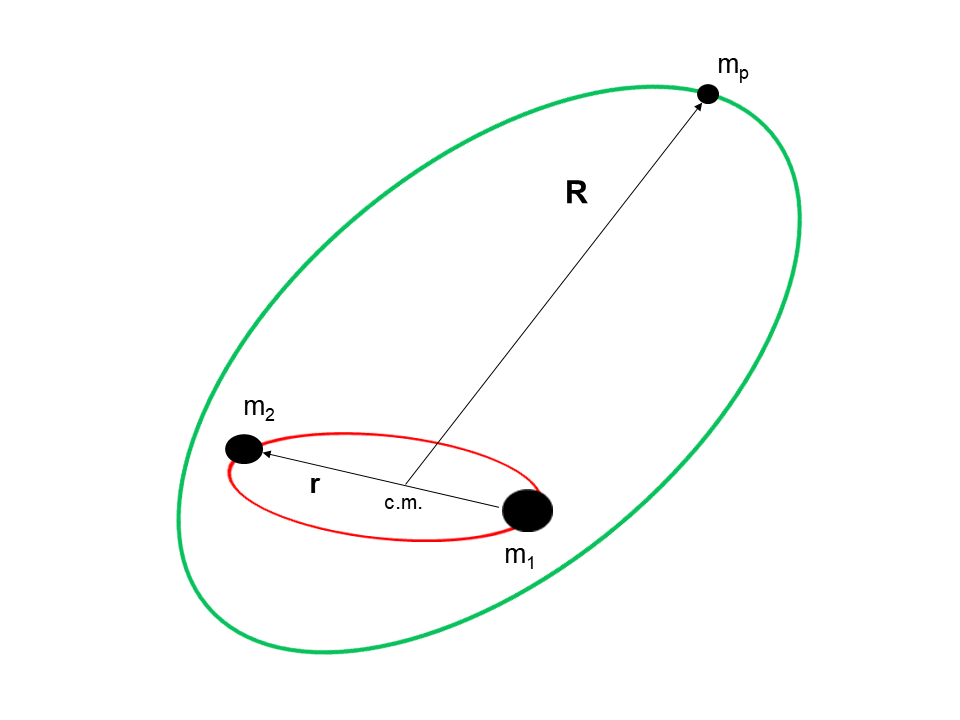
من أجل دراسة مشكلة الاستقرار الديناميكي للكواكب المحيطة بالثنائيات، استخدمنا عمليات المحاكاة العددية على نطاق واسع. في قلب عمليات المحاكاة لدينا، يوجد التكامل المنتظم والمتكامل مع تحويل الوقت الذي تم تطويره فيه Mikkola (1997). هذه التعليمات البرمجية ليست فقط ذات طبيعة تناظرية، مما يضمن الحفاظ الكافي على طاقة النظام والزخم الزاوي، بل إنها أيضًا واحدة من الخوارزميات التناظرية القليلة التي يمكنها التعامل مع مدارات شديدة الانحراف وتفاعلات جاذبية موضعية قوية دون فقدان الدقة.
يستخدم الكود إحداثيات جاكوبي، أي أنه يحسب النسبي
متجهات الموقع والسرعة للنجوم والكوكب في كل خطوة زمنية.
يتم تطبيع الأنظمة بحيث يكون ثابت الجاذبية  وكتل النجوم الثنائية . تم أيضًا تطبيع المحور شبه الرئيسي الأولي للثنائي إلى الوحدة في الوحدات المقابلة.
نقوم بتحويل مخرجات التكامل إلى مجموعة من العناصر المدارية الكبلرية للنجوم الثنائية والكوكب.
وكتل النجوم الثنائية . تم أيضًا تطبيع المحور شبه الرئيسي الأولي للثنائي إلى الوحدة في الوحدات المقابلة.
نقوم بتحويل مخرجات التكامل إلى مجموعة من العناصر المدارية الكبلرية للنجوم الثنائية والكوكب.
تتكون جميع الأنظمة من ثنائي نجمي وكوكب في مدار أوسع حول مركز كتلة الثنائي. ولم نفرض قيودًا على التكوينات المدارية الابتدائية؛ إذ درسنا مدارات دائرية وذات انحراف مركزي، ومدارات مستوية وغير مستوية، ولم نفترض أن أيًا من الأجسام الثلاثة عديم الكتلة. تم التعامل مع جميع الأجسام على أنها كتل نقطية وكانت الجاذبية النيوتونية هي التأثير الوحيد الذي تم أخذه في الاعتبار.
2.1 فضاء المعلمات التي تم أخذ عينات منها
هدفنا هو أن نكون شاملين قدر الإمكان في هذه الدراسة، مما يستلزم مسح جميع المعلمات ذات الصلة.نستخدم معلمتين للكتلة,
| (4) |
أُخذت العينات من فضاء معلمات الكتلة على النحو الآتي
| (5) |
و
| (6) |
كمستوى مرجعي لدينا، فإننا نعتبر المستوى المداري الأولي للثنائي حيث يشير المحور السيني إلى اتجاه خط طول حضيض الثنائي. ومن ثم، بدأ حضيض الثنائي من الصفر في جميع الحالات. إن اختيار الميل المتبادل الأولي بين المستويين المداري الثنائي ومدار الكوكب يغطي كلا من المدارات التقدمية والرجعية. لقد أخذنا عينات من القيم بين و  مع خطوة ، أي
مع خطوة ، أي
 |
(7) |
بالنسبة للمدارات غير المستوية، خط طول العقدة الصاعدة للكوكب . خط الطول الكوكبي للحضيض (عند التعامل مع مدارات متحدة المستوى) وحجة الحضيض  (عند العمل مع مدارات ثلاثية الأبعاد) أعطيت نفس القيم .
لقد درسنا في البداية مدارات دائرية وذات انحرافات مركزية لكل من المدار الثنائي والمدار الكوكبي. وهكذا، تم أخذ عينات من الانحرافات كما
(عند العمل مع مدارات ثلاثية الأبعاد) أعطيت نفس القيم .
لقد درسنا في البداية مدارات دائرية وذات انحرافات مركزية لكل من المدار الثنائي والمدار الكوكبي. وهكذا، تم أخذ عينات من الانحرافات كما
| (8) |
حيث  هو الانحراف الكوكبي.
في البداية، تم وضع الكوكب في ثمانية مواقع مختلفة
هو الانحراف الكوكبي.
في البداية، تم وضع الكوكب في ثمانية مواقع مختلفة
| (9) |
حيث يدل على الشذوذ الحقيقي للكوكب. عندما كان الكوكب في مدار دائري في البداية، بدأ في نفس المواقع الزاوية حول النجم الثنائي. بالنسبة للثنائيات ذو انحراف مركزي، استخدمنا و , كونه الشذوذ الحقيقي للثنائي النجمي.
بالنسبة لمجموعة معينة من المعلمات الأولية، بدأنا الكوكب بمحور شبه رئيسي  أقرب ما يمكن إلى الثنائي (مع الشرط الوحيد وهو أنه، ابتدائيًا، كان لا بد أن تكون مسافة حضيض الكوكب الابتدائية أكبر من مسافة أوج الثنائي). ثم تمت محاكاة النظام تدريجياً للحصول على قيم أعلى لـ بدقة 0.1. تم إيقاف الإجراء عندما تمكنا من تحديد حالة استقرار النظام لتلك المجموعة من الشروط الأولية. وأخيرا، تم ضبط وقت التكامل على الفترات المدارية للكوكب.
أقرب ما يمكن إلى الثنائي (مع الشرط الوحيد وهو أنه، ابتدائيًا، كان لا بد أن تكون مسافة حضيض الكوكب الابتدائية أكبر من مسافة أوج الثنائي). ثم تمت محاكاة النظام تدريجياً للحصول على قيم أعلى لـ بدقة 0.1. تم إيقاف الإجراء عندما تمكنا من تحديد حالة استقرار النظام لتلك المجموعة من الشروط الأولية. وأخيرا، تم ضبط وقت التكامل على الفترات المدارية للكوكب.
2.2 تعريف العمل للاستقرار الديناميكي
في سياق هذا العمل، تم اعتبار النظام غير مستقر إذا تم استيفاء شرط واحد على الأقل من الشروط التالية:
أ) تجاوز الانحراف المركزي للمدار الثنائي أو الكوكبي الوحدة، ب) حدث عبور المدار، ج) أو ,د) ,
حيث هو المحور الثنائي شبه الرئيسي الأولي. تم تصنيف النظام على أنه مستقر ديناميكيًا عندما لم تظهر عمليات المحاكاة العددية أي علامة على عدم الاستقرار لأي موضع أولي للكوكب في مداره خلال فترة زمنية كاملة، أي  الفترات المدارية للكوكب.
وبطبيعة الحال، فإن تعريفنا للاستقرار هو واحد من بين تعريفات كثيرة، كما رأينا على سبيل المثال في الفقرات السابقة عندما تحدثنا عن بعض النتائج السابقة، أو كما يمكن رؤيته في مكان آخر (مثلا Szebehely, 1984).
الفترات المدارية للكوكب.
وبطبيعة الحال، فإن تعريفنا للاستقرار هو واحد من بين تعريفات كثيرة، كما رأينا على سبيل المثال في الفقرات السابقة عندما تحدثنا عن بعض النتائج السابقة، أو كما يمكن رؤيته في مكان آخر (مثلا Szebehely, 1984).
لكل مجموعة من المعلمات () سجلنا ثلاث مناطق أو أنظمة استقرار مختلفة: 1) الحركة المستقرة لجميع مجموعات الشذوذ الحقيقي/الموضع الزاوي، 2) الحركة المختلطة بين الاستقرار وعدم الاستقرار مع مجموعة واحدة على الأقل من الشذوذ الحقيقي/الموضع الزاوي مستقرة ومجموعة واحدة على الأقل غير مستقرة و3) حركة غير مستقرة لجميع مجموعات الشذوذ الحقيقي/الموضع الزاوي الابتدائية. بالنسبة لمجموعة معينة من المعلمات، يُطلق على المحور شبه الرئيسي للكوكب، حيث يحدث الانتقال بين منطقتين من مناطق سلوك الاستقرار وعدم الاستقرار المذكورة أعلاه، اسم المحور شبه الرئيسي الحرج . ومن ثم، فإننا نحدد محورين حرجين شبه رئيسيين: المحور الحرج الخارجي (أو العلوي) شبه الرئيسي، وهو الحدود بين النظامين (i) و(ii) والمحور شبه الرئيسي الحرج الداخلي (أو الأدنى)، وهو الحد الفاصل بين النظامين (ii) و(iii). تم تقديم نظام تصنيف الاستقرار هذا في Dvorak (1986),ويدفعه أن أن الأنظمة الديناميكية غير الخطية تظهر حساسية شديدة للتغيرات في الظروف الأولية في المناطق الواقعة داخل المجالات الفوضوية أو قربها.
3 النتائج
أسفرت دراستنا العددية لتكوينات النظام 307,330,101 عن قاعدة بيانات لقيم المحاور شبه الرئيسية الحرجة للكوكب من حيث المعلمات والظروف الأولية الموضحة في القسم السابق. على الرغم من أن حدود الاستقرار المحيطة بالثنائيات ليست عشوائية بأي حال من الأحوال، إلا أنه يمكن أن يكون من المفيد التحقق من توزيع المحاور شبه الرئيسية الحرجة. يمكن العثور على تمثيل رسومي لنتائجنا في الأشكال 2 و 3 والتي تحتوي على مخططات للقيم المتوسطة والانحرافات المعيارية لتوزيع المحور شبه الرئيسي الحرج الخارجي مقابل المحور شبه الرئيسي الحرج الداخلي، بعد التهميش على جميع المعلمات باستثناء تلك المعروضة على محور اللون.
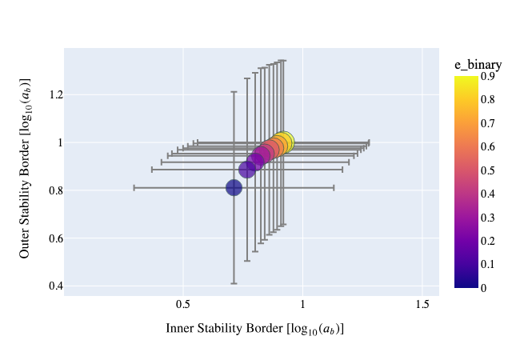
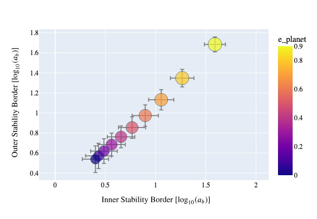
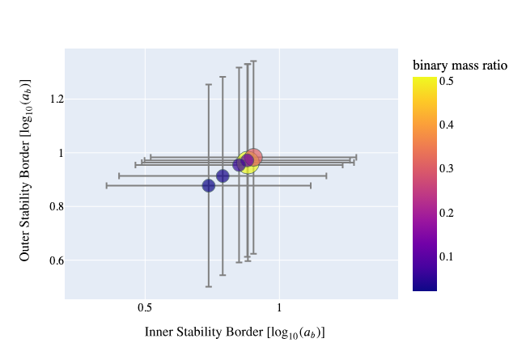
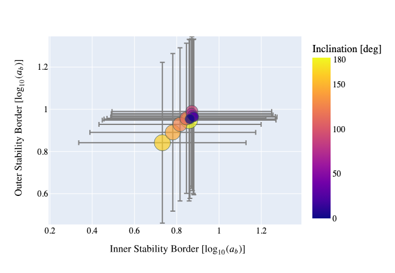
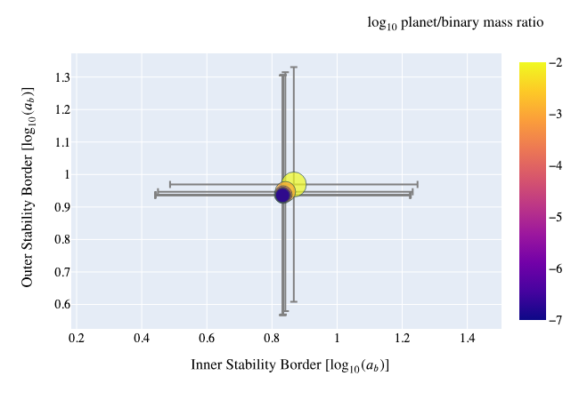
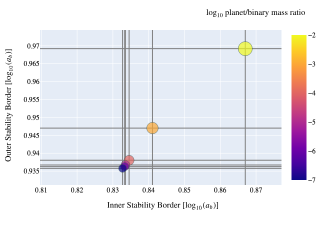
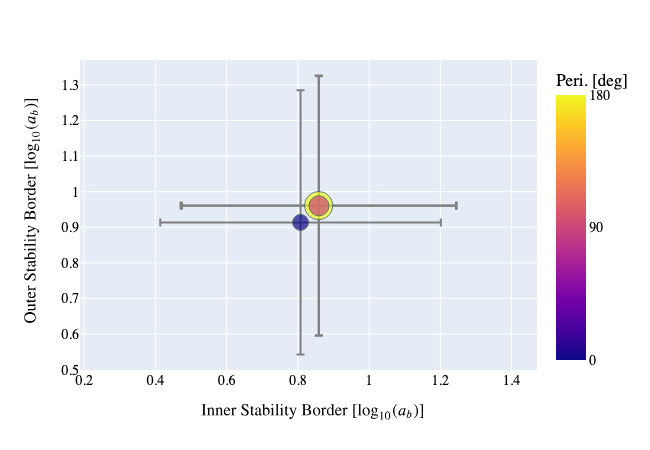
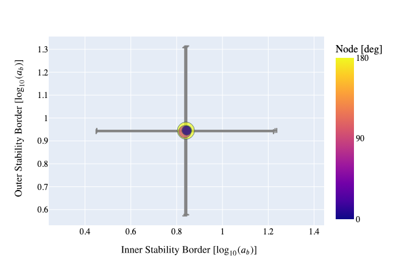
كانت المعلمة التي كان لها التأثير الأكبر على استقرار الأنظمة هي الانحراف الكوكبي (اللوحة اليمنى العلوية من الشكل 2).ارتفاع قيم الانحراف الكوكبي (خاصة )تعطي قيمًا أعلى للحدين الحرجين. وكان هذا التأثير أقوى عندما تم دمجه مع قيم معتدلة إلى عالية من الانحراف الثنائي. هذا أمر متوقع نظرًا لأن أحد الدوافع الرئيسية لعدم الاستقرار الديناميكي في مشكلة الأجسام الثلاثة الهرمية هو تداخل الرنين (Chirikov, 1979).يتناسب عرض الرنين في مثل هذه التكوينات مع كلا الانحرافين المركزيين وله اعتماد قوي على الانحراف الخارجي عندما يصبح الأخير كبيرًا (مثلا Mardling, 2008, 2013).ويمكن رؤية مثال على هذه الظاهرة في الشكل 4، حيث نقوم ببناء خريطة الاستقرار لنظام TOI-1338.
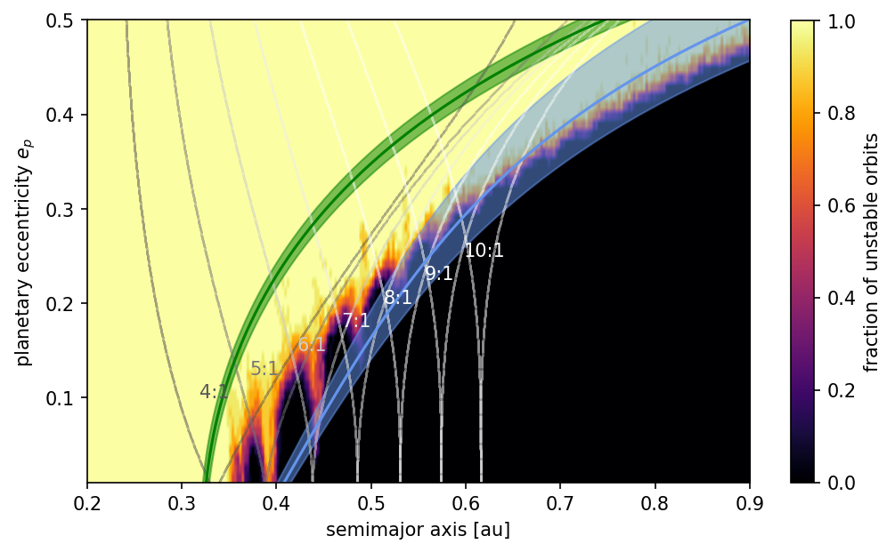
 تتوافق مناطق عدم اليقين مع الملاءمات التجريبية المقدمة في المعادلة(10).
تتوافق مناطق عدم اليقين مع الملاءمات التجريبية المقدمة في المعادلة(10).يبدو أن نسبة الكتلة الثنائية والميل المتبادل لهما تأثير معتدل على موقع حدي الاستقرار. كما هو موضح في اللوحة اليسرى السفلية من الشكل 2,أصغر قيمة لنسبة الكتلة الثنائية, يبدو أنه يؤدي إلى مناطق أكبر من الحركة المحيطة بالثنائيات المستقرة. ومع تقدمنا إلى قيم أعلى لنسبة الكتلة الثنائية، تبدأ المنطقة المستقرة في الانكماش وتصل إلى الحد الأدنى عندما يتكون الثنائي الداخلي من أجسام ذات كتل متقاربة. يتم تقديم تلميح لهذا النوع من السلوك من خلال التطور العلماني. وفق Georgakarakos and Eggl (2015) فنحن نعلم، على سبيل المثال، أن أقصى انحراف مركزي للمدار المحيط بالثنائي يتناسب مع أو,
إذا عبرنا عن ذلك من حيث نسبة الكتلة الثنائية, .
وهذا يعني قيم أصغر من  تعطي قيمًا أصغر من الحد الأقصى . وتؤدي الانحرافات الكوكبية الأصغر بدورها إلى أنظمة أكثر استقرارًا.
تعطي قيمًا أصغر من الحد الأقصى . وتؤدي الانحرافات الكوكبية الأصغر بدورها إلى أنظمة أكثر استقرارًا.
عند النظر في تأثير الميل المتبادل على الاستقرار المحيط بالثنائي، أكدت نتائج المحاكاة لدينا أن المدارات الرجعية، بشكل عام، بالقرب من ميول يبدو أكثر استقرارًا، أي أن حدود الاستقرار كانت أقرب إلى الثنائي النجمي مقارنة بنظام ذي مدار تقدمي بنفس المعلمات (مثلا Georgakarakos, 2008, 2013, واللوحة اليمنى السفلى من الشكل 2).ومع ذلك، وقد شوهد هذا في الدراسات السابقة أيضا (مثلا Doolin and Blundell, 2011; Chen et al., 2020),كانت هناك حالات لم يتبع فيها سلوك حدود الاستقرار كدالة للميل المتبادل هذا الاتجاه. ويقدم الشكل 5 مثل هذا المثال. سلوك حدود الاستقرار كما هو موضح في الشكل 5 قد يرتبط بميسان عقدة المدار الكوكبي حول الناجم عن الثنائي النجمي. وقد تمت ملاحظة هذا السلوك الديناميكي ومناقشته في العديد من الدراسات من قبل (مثلا Verrier and Evans, 2009; Farago and Laskar, 2010; Naoz et al., 2017).
بينما كانت جميع الأجسام في عمليات المحاكاة لدينا ضخمة, لقد ركزنا على الاضطرابات الخارجية ذات الكتلة المنخفضة نسبيًا والتي لا تتجاوز واحد بالمائة من كتلة الثنائي الداخلي. وبالتالي فإن كتلة الرفيق الخارجي لم يكن لها تأثير كبير على حدود الثبات (الصف العلوي من الشكل 1). 3).ليس من المستغرب أن أعلى قيمة أظهر التأثير الأكبر، خاصة بالنسبة للأنظمة عندما كان بين عضوي الثنائي فرق كبير في الكتلة.
وأخيرًا، فإن الزوايا التي تتطور ببطء، أي خط طول العقدة الصاعدة وحجة الحضيض في مدار الكوكب، لم تؤثر بشكل كبير على موقع حدودنا الحرجة كما هو موضح في الصف السفلي من الشكل 3. بالطبع، كانت هناك حالات كان فيها انحراف كبير بين قيم حدود الاستقرار الأصغر والأكبر لمجموعات مختلفة من الزوايا المتغيرة البطيئة. ومع ذلك، فإن هذا الاختلاف في التطور الديناميكي للأنظمة الكوكبية اعتمادًا على اتجاه المدارات، هو أمر معروف جيدًا في الميكانيكا السماوية (مثلا Michtchenko and Malhotra, 2004; Hadjidemetriou, 2006).
يعد إنشاء مصفوفة الارتباط طريقة أخرى لقياس الترابط بين المتغيرات في مجموعة بيانات المحاكاة الخاصة بنا. تحتوي مصفوفة الارتباط على معاملات ارتباط بيرسون لجميع متغيرات النموذج، أي تباين أزواج متغيرين مقسومًا على حاصل ضرب انحرافاتهما المعيارية.
يتم عرض مصفوفة الارتباط لمجموعة البيانات الخاصة بنا في الشكل 6. ترتبط الحدود الداخلية والخارجية بشكل كامل تقريبًا، كما هو واضح من البنية القطرية في القيم المتوسطة في الأشكال 2 و 3. تشير مصفوفة الارتباط أيضًا إلى تأثير انحراف مركزية الكواكب  يهيمن على حدود الاستقرار الداخلي والخارجي.
يهيمن على حدود الاستقرار الداخلي والخارجي.
أخيرا، الشكل 7 يحتوي على مجموعة من المخططات التي تغطي جزءًا كبيرًا من فضاء المعلمات لدينا وتوفر إحساسًا بكيفية تأثير مجموعات المعلمات المختلفة على موقع المحاور شبه الرئيسية الحرجة. المخططات هي شكل آخر من أشكال تصور النتائج التي تمت مناقشتها أعلاه.
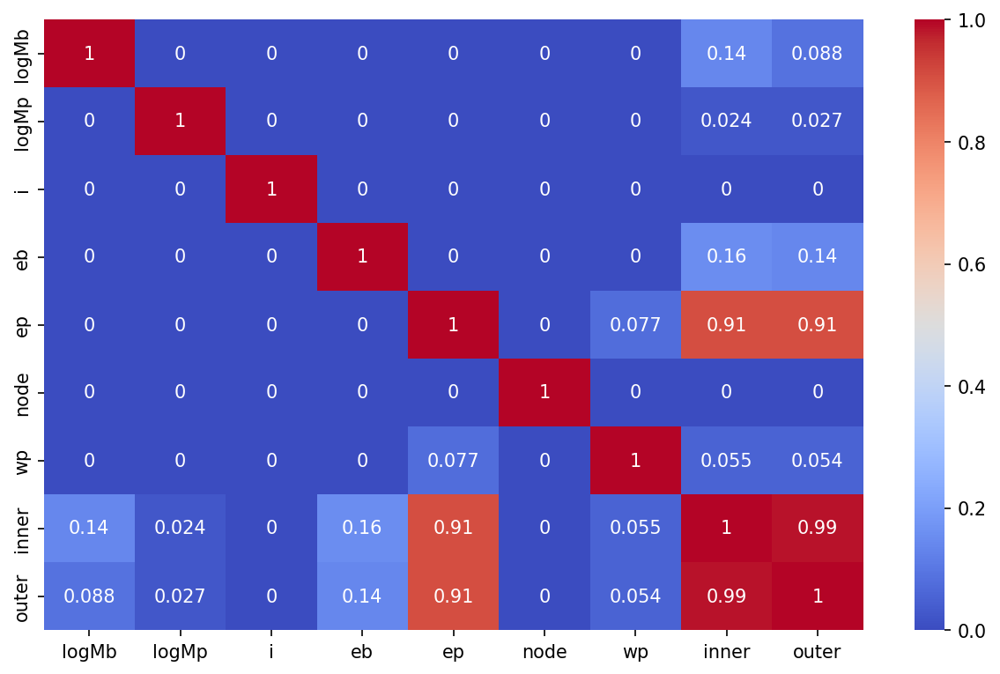
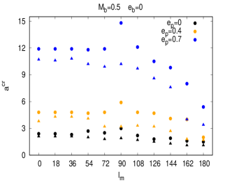
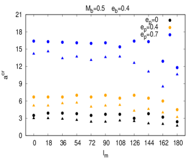
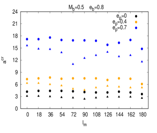
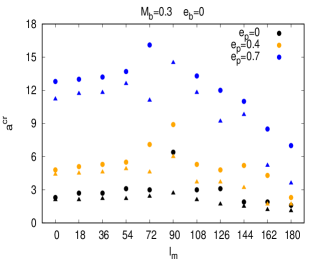
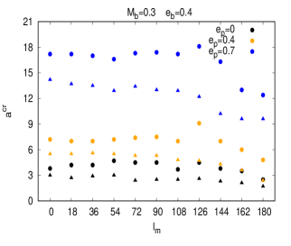
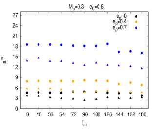
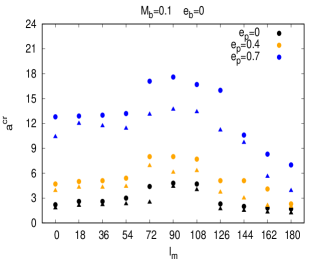
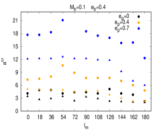
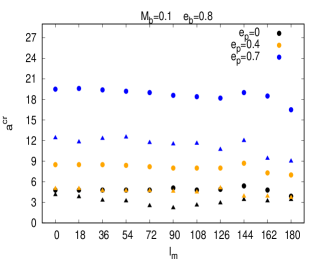
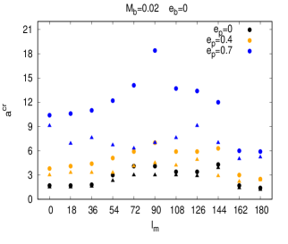
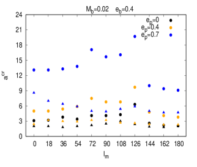
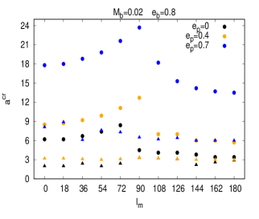
3.1 صيغ الملاءمة
من أجل تحديد نتائج تجاربنا العددية وتوفير أداة لتقييم الاستقرار الديناميكي لنظام معين، قمنا باستخلاص صيغ تجريبية للحدود الحرجة على فضاء المعلمات بأكملها. اتبعت العملية الخطوات الآتية. لكل مجموعة محددة من  ,
,  ,
,  ,
,  و
و  ,لقد قمنا بمحاكاة ديناميكيات النظام لتسعة مواضع بداية نسبية أولية للثنائي والكوكب المقابل لأزواج مختلفة من . ونتج عن ذلك، لكل مجموعة من قيم و
,لقد قمنا بمحاكاة ديناميكيات النظام لتسعة مواضع بداية نسبية أولية للثنائي والكوكب المقابل لأزواج مختلفة من . ونتج عن ذلك، لكل مجموعة من قيم و  و
و  و
و  و
و  ، تسعة محاور شبه رئيسية كوكبية حرجة داخلية وتسعة محاور شبه رئيسية حرجة خارجية.
بالنسبة إلى نظام متحد المستوى ذي كوكب منحرف مركزيًا في البداية أو نظام غير متحد المستوى لديه كوكب في مدار دائري في البداية، لا يمكن تحديد خط طول العقدة الصاعدة في الحالة السابقة وحجة الحضيض في الحالة الأخيرة. وبالتالي، لم يكن لدينا سوى ثلاث قيم للمحاور شبه الرئيسية الحرجة الداخلية وثلاث قيم خارجية بدلاً من تسعة لهذه الأنواع المحددة من الأنظمة.
أما الأنظمة المستوية ذات الكواكب الدائرية فقط فقد أعطت إلى قيمة فريدة لكل من الحدين الحرجين.
، تسعة محاور شبه رئيسية كوكبية حرجة داخلية وتسعة محاور شبه رئيسية حرجة خارجية.
بالنسبة إلى نظام متحد المستوى ذي كوكب منحرف مركزيًا في البداية أو نظام غير متحد المستوى لديه كوكب في مدار دائري في البداية، لا يمكن تحديد خط طول العقدة الصاعدة في الحالة السابقة وحجة الحضيض في الحالة الأخيرة. وبالتالي، لم يكن لدينا سوى ثلاث قيم للمحاور شبه الرئيسية الحرجة الداخلية وثلاث قيم خارجية بدلاً من تسعة لهذه الأنواع المحددة من الأنظمة.
أما الأنظمة المستوية ذات الكواكب الدائرية فقط فقد أعطت إلى قيمة فريدة لكل من الحدين الحرجين.
عندما كان يتوافر أكثر من محور شبه رئيسي حرج لمجموعة من  ,
,  ,
,  ,
,  و
و  المعلمات، احتفظنا بأكبر قيمة للحد الحرج الخارجي وأصغر قيمة للحد الحرج الداخلي. توفر القيم القصوى علامة أفضل للحدود الحرجة كما هو محدد في القسم(2.2).وفي الوقت نفسه، يؤدي هذا إلى تقليل عدد المتغيرات المستقلة بمقدار اثنين
المعلمات، احتفظنا بأكبر قيمة للحد الحرج الخارجي وأصغر قيمة للحد الحرج الداخلي. توفر القيم القصوى علامة أفضل للحدود الحرجة كما هو محدد في القسم(2.2).وفي الوقت نفسه، يؤدي هذا إلى تقليل عدد المتغيرات المستقلة بمقدار اثنين  و يؤخذان في الحسبان. علاوة على ذلك، قررنا إسقاط كتلة الكوكب من متغيرات الملاءمة، كما هو موضح في القسم 3,كان لهذه المعلمة المحددة تأثير ضئيل على المحاور شبه الرئيسية الحرجة للكواكب المحيطة.
و يؤخذان في الحسبان. علاوة على ذلك، قررنا إسقاط كتلة الكوكب من متغيرات الملاءمة، كما هو موضح في القسم 3,كان لهذه المعلمة المحددة تأثير ضئيل على المحاور شبه الرئيسية الحرجة للكواكب المحيطة.
من أجل توفير أداء ملاءمة مناسب للمعلمات التي سمح لها بالتغير بعدة أوامر من حيث الحجم، قمنا بإعادة قياس نسبة الكتلة الثنائية والمسافات الحرجة من خلال اللوغاريتم (أساسه 10)بينما تم أخذ الميل المتبادل بالراديان. المتغيرات المستقلة الأربعة المتبقية، أي  , ,
, ,  و
و  ,استُخدمت في الملاءمة، حيث تم اختبار نماذج متعددة الحدود من الدرجة الأولى والثانية والثالثة مقابل البيانات. يمثل نموذج الترتيب الثالث في تلك المتغيرات مجموعة البيانات الخاصة بنا بشكل أفضل. واستُخدم اختبار جودة الملاءمة
,استُخدمت في الملاءمة، حيث تم اختبار نماذج متعددة الحدود من الدرجة الأولى والثانية والثالثة مقابل البيانات. يمثل نموذج الترتيب الثالث في تلك المتغيرات مجموعة البيانات الخاصة بنا بشكل أفضل. واستُخدم اختبار جودة الملاءمة  للتأكد من أن ظروفنا التجريبية المشتقة إحصائيًا تعكس مخرجات المحاكاة.
للتأكد من أن ظروفنا التجريبية المشتقة إحصائيًا تعكس مخرجات المحاكاة.
نظرًا لأن الترتيب الثالث الملائم لأربعة متغيرات مستقلة غير عملي إلى حد ما نظرًا للعدد الكبير من المعاملات، فقد حاولنا تقليل تعقيد الملاءمة بشكل أكبر.
لقد قمنا بإزالة شروط الملاءمة على التوالي أثناء مراقبة معلمة  المختزلة(,n هو عدد نقاط البيانات). بعد اتخاذ القرار بشأن المصطلحات التي سيتم الاحتفاظ بها في النموذج النهائي، قمنا بإعادة تركيب النموذج المختزل الجديد على نقاط البيانات الخاصة بنا من أجل ضمان أفضلية المعاملات بمعنى المربعات الصغرى. لتعزيز جودة النتيجة الإجمالية، طبقنا العملية المذكورة أعلاه على مجموعتين من البيانات: الأولى شملت الانحرافات الكوكبية 0.8 أو أقل بينما تضمنت المجموعة الثانية جميع قيم الانحراف المركزي الكوكبي. أُجري هذا التقسيم لتوفير ملاءمة أفضل للحالات التي
المختزلة(,n هو عدد نقاط البيانات). بعد اتخاذ القرار بشأن المصطلحات التي سيتم الاحتفاظ بها في النموذج النهائي، قمنا بإعادة تركيب النموذج المختزل الجديد على نقاط البيانات الخاصة بنا من أجل ضمان أفضلية المعاملات بمعنى المربعات الصغرى. لتعزيز جودة النتيجة الإجمالية، طبقنا العملية المذكورة أعلاه على مجموعتين من البيانات: الأولى شملت الانحرافات الكوكبية 0.8 أو أقل بينما تضمنت المجموعة الثانية جميع قيم الانحراف المركزي الكوكبي. أُجري هذا التقسيم لتوفير ملاءمة أفضل للحالات التي  حيث تتحرك حدود الاستقرار بشكل كبير عندما يكون .
حيث تتحرك حدود الاستقرار بشكل كبير عندما يكون .
3.2 الملاءمات التجريبية ل 
إذا قُصر الانحراف الكوكبي على ,المحور الحرج الداخلي شبه الرئيسي والمحور الحرج الخارجي شبه الرئيسي فيمكن حسابهما باستخدام الملاءمات التجريبية التالية:
| (10) |
حيث هو الضرب النقطي بين متجهات معاملات الملاءمة (جنبًا إلى جنب مع متجهات عدم اليقين الخاصة بهم )ومتجهات المعلمة للحدود الداخلية والخارجية على التوالي. مع ,تكون المتجهات المقابلة كما يأتي
| (11) |
بالنسبة للمحور شبه الرئيسي الكوكبي الحرج الخارجي نجد
| (12) |
3.3 الملاءمات التجريبية لمجموعة البيانات بأكملها
الاستفادة من نفس بنية المعادلات(10)بالنسبة للمحاور شبه الرئيسية الحرجة الداخلية والخارجية، نجد المعاملات والمعلمات التالية التي تغطي مجموعة البيانات الكاملة للمحور شبه الرئيسي الحرج الداخلي للكوكب:
| (13) |
بالنسبة للمحور الحرج الخارجي شبه الرئيسي للكوكب لدينا:
| (14) |
يرد تمثيل مرئي لجودة الملاءمات التجريبية في الأشكال 8 و 9. في الشكل 8 لدينا سلسلة من المخططات التي توضح توزيع النسبة المئوية للخطأ النسبي بين نقاط البيانات والملاءمات، أي كونه المحور شبه الرئيسي الحرج من عمليات المحاكاة. وفي جميع الحالات تقع أغلب الأخطاء داخل . أخطاء أكبر من ظهرت في أقل من اثنين بالمائة من جميع الحالات. ويوضح الشكل 9 فعالية صيغنا التجريبية لعينة من مجموعات الكتل والانحرافات المدارية.
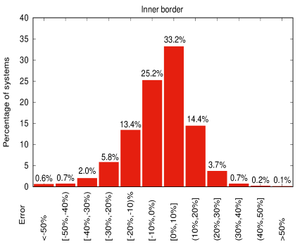
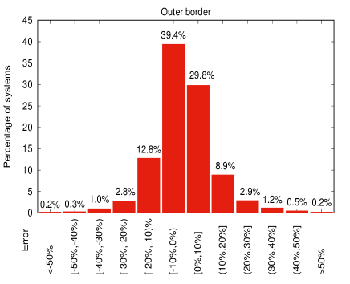
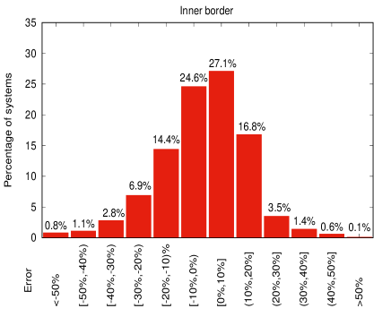
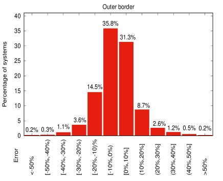
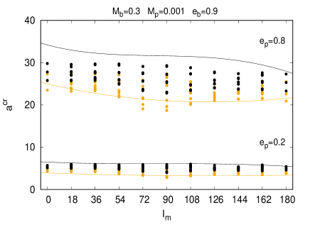
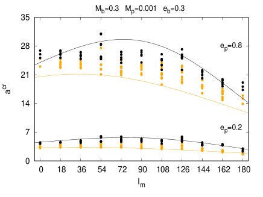
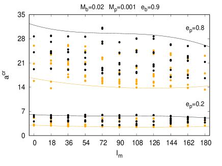
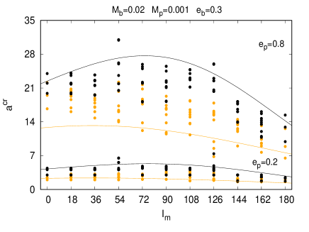
4 أداء الملاءمات ضد عمليات المحاكاة العشوائية
من أجل اختبار جودة صيغ الملاءمة لدينا، قمنا بتنفيذ عدد من عمليات المحاكاة الإضافية التي تم إنشاؤها عشوائيًا.
تم إنشاء الشروط الأولية لهذه المحاكاة باستخدام توليد الأرقام العشوائية الزائفة
الدالة في GNU Fortran.تم استخلاص قيم المعلمات من توزيع موحد ضمن النطاقات الواردة في القسم 2، أي
, و  , ,
, ,  ,
,  و
و  . أما بالنسبة إلى ,سحبنا قيم بشكل موحد في النطاق
. من أجل أخذ عينة من المحور شبه الرئيسي الكوكبي، قمنا أولاً بإنشاء توزيعتين لهذا المتغير: أحدهما يعتمد على مجموعة البيانات الخاصة بالمحور شبه الرئيسي الحرج الداخلي والآخر يعتمد على مجموعة البيانات الخاصة بالمحور شبه الرئيسي الحرج الخارجي. ثم استخدمنا أخذ العينات بالرفض لإنشاء مجموعة من 25,000 أنظمة عشوائية تعتمد على توزيع القيمة الحرجة الداخلية ومجموعة أخرى من الأنظمة ذات العدد المتساوي باستخدام توزيع القيمة الحرجة الخارجية. كان رقم البذرة العشوائي للمجموعة الأولى هو 121، بينما بالنسبة للآخر كانت البذرة 446.
. أما بالنسبة إلى ,سحبنا قيم بشكل موحد في النطاق
. من أجل أخذ عينة من المحور شبه الرئيسي الكوكبي، قمنا أولاً بإنشاء توزيعتين لهذا المتغير: أحدهما يعتمد على مجموعة البيانات الخاصة بالمحور شبه الرئيسي الحرج الداخلي والآخر يعتمد على مجموعة البيانات الخاصة بالمحور شبه الرئيسي الحرج الخارجي. ثم استخدمنا أخذ العينات بالرفض لإنشاء مجموعة من 25,000 أنظمة عشوائية تعتمد على توزيع القيمة الحرجة الداخلية ومجموعة أخرى من الأنظمة ذات العدد المتساوي باستخدام توزيع القيمة الحرجة الخارجية. كان رقم البذرة العشوائي للمجموعة الأولى هو 121، بينما بالنسبة للآخر كانت البذرة 446.
يتم عرض نتائج عمليات المحاكاة العشوائية وكيفية تصنيفها بناءً على صيغنا الملائمة في الجداول(1)و(2). كما جاء في القسم 2,يبدأ الكوكب في ثمانية مواضع مختلفة حول الثنائي، بينما يبدأ الثنائي إما عند الحضيض أو عند الأوج. وهذا يجعل إجمالي ستة عشر موضعًا أوليًا لأنظمتنا. بحكم التعريف، نود تجنب مواجهة مدارات غير مستقرة خارج المحور الحرج الخارجي شبه الرئيسي وأي مدارات مستقرة تحت المحور الحرج الداخلي شبه الرئيسي. ولذلك، فإننا نحدد معاييرنا للنجاح على النحو التالي: الملاءمات تتنبأ باستقرار النظام بنجاح عندما تكون الأنظمة 0 وُجدت مواقع غير مستقرة في المنطقة المستقرة، وأنظمة ذات 16 وُجدت مواضع غير مستقرة في المنطقة غير المستقرة وأخيراً، عندما كانت جميع الحالات الأخرى بين هاتين المنطقتين.
وبشكل عام فإن نتائج المقارنة بين الملاءمات ونتائج محاكاة النظام العشوائي كانت جيدة جداً. إذا أخذنا في الاعتبار ما يناسب  ,وُجدت غالبية الأنظمة المستقرة تمامًا وغير المستقرة تمامًا في المكان المناسب. فقط 1 حالة واحدة من
,وُجدت غالبية الأنظمة المستقرة تمامًا وغير المستقرة تمامًا في المكان المناسب. فقط 1 حالة واحدة من  و 54 حالات من s وُجدت في المنطقة الخطأ (أي 0s في المنطقة غير المستقرة تمامًا و 16s في المنطقة المستقرة تمامًا). أيضًا, تم تصنيف الأنظمة ذات سلوك الاستقرار المختلط بشكل صحيح.
وفي المجمل، كانت نسبة النجاح . تشير الأرقام المذكورة أعلاه إلى الأنظمة العشوائية التي تم استخلاصها من توزيع الحدود الداخلية، إلا أن النمط كان مشابهاً جداً للأنظمة المسحوبة من توزيع الحدود الخارجية. وبلغ معدل النجاح لتلك الأنظمة
و 54 حالات من s وُجدت في المنطقة الخطأ (أي 0s في المنطقة غير المستقرة تمامًا و 16s في المنطقة المستقرة تمامًا). أيضًا, تم تصنيف الأنظمة ذات سلوك الاستقرار المختلط بشكل صحيح.
وفي المجمل، كانت نسبة النجاح . تشير الأرقام المذكورة أعلاه إلى الأنظمة العشوائية التي تم استخلاصها من توزيع الحدود الداخلية، إلا أن النمط كان مشابهاً جداً للأنظمة المسحوبة من توزيع الحدود الخارجية. وبلغ معدل النجاح لتلك الأنظمة  .
يمكن العثور على تصنيف الأنظمة العشوائية لمجموعة البيانات المقيدة في الجدول 1، حيث توفر الأرقام المكتوبة بالخط العريض في المواضع القطرية للجدول، عند إضافتها، إجمالي أرقام معدل النجاح المذكورة أعلاه.
.
يمكن العثور على تصنيف الأنظمة العشوائية لمجموعة البيانات المقيدة في الجدول 1، حيث توفر الأرقام المكتوبة بالخط العريض في المواضع القطرية للجدول، عند إضافتها، إجمالي أرقام معدل النجاح المذكورة أعلاه.
لكن هذه النسب تعتبر تقديرات محافظة. وذلك لأنه، كما رأينا في نتائج المجموعة الأصلية من عمليات المحاكاة,
قد يقع أحيانًا نظام مستقر تمامًا أو غير مستقر تمامًا، عند محور شبه رئيسي محدد، في المنطقة المختلطة. وفي هذه الحالة يمكننا أن نضيف إلى النسب السابقة 0s و 16s الموجودة في المنطقة المختلطة (الأرقام بالخط العريض في الجدول 1 التي لا تقع على قطرها). عندما نفعل ذلك،  و ترتفع إلى و على التوالي. وتمثل هذه الأرقام الآن السيناريو الأفضل. ومع ذلك، فإننا نتوقع أن يكون معدل النجاح في مكان ما بين تلك القيم الحدية لأننا لا نعرف الموقع الدقيق للموقع 0s و 16s نظرًا لأنه بالنسبة لمجموعة محددة من الكتل والميل والانحرافات المركزية والزوايا البطيئة، لدينا فقط نتائج لمحور شبه رئيسي محدد و
لا نطاقًا كاملًا منها، على خلاف ما كان عليه الحال مع عمليات المحاكاة الأولية التي استُخدمت لاشتقاق الملاءمات. كما هو موضح في الجدول 2، حيث يتم تصنيف بيانات المحاكاة العشوائية باستخدام الملاءمة لمجموعة البيانات بأكملها، فإن معدلات التنبؤ بالنجاح تشبه إلى حد كبير تلك التي تم الحصول عليها في حالة الملاءمة
و ترتفع إلى و على التوالي. وتمثل هذه الأرقام الآن السيناريو الأفضل. ومع ذلك، فإننا نتوقع أن يكون معدل النجاح في مكان ما بين تلك القيم الحدية لأننا لا نعرف الموقع الدقيق للموقع 0s و 16s نظرًا لأنه بالنسبة لمجموعة محددة من الكتل والميل والانحرافات المركزية والزوايا البطيئة، لدينا فقط نتائج لمحور شبه رئيسي محدد و
لا نطاقًا كاملًا منها، على خلاف ما كان عليه الحال مع عمليات المحاكاة الأولية التي استُخدمت لاشتقاق الملاءمات. كما هو موضح في الجدول 2، حيث يتم تصنيف بيانات المحاكاة العشوائية باستخدام الملاءمة لمجموعة البيانات بأكملها، فإن معدلات التنبؤ بالنجاح تشبه إلى حد كبير تلك التي تم الحصول عليها في حالة الملاءمة  .
.
| INNER BORDER DISTRIBUTION | |||||
| Quantity per zone | |||||
| N.U.I.P. | Stable | Mixed | Unstable | Total | |
| Total | |||||
| OUTER BORDER DISTRIBUTION | |||||
| Quantity per zone | |||||
| N.U.I.P. | Stable | Mixed | Unstable | Total | |
| Total |
| INNER BORDER DISTRIBUTION | |||||
| Quantity per zone | |||||
| N.U.I.P. | Stable | Mixed | Unstable | Total | |
| Total | |||||
| OUTER BORDER DISTRIBUTION | |||||
| Quantity per zone | |||||
| N.U.I.P. | Stable | Mixed | Unstable | Total | |
| Total |
5 الملاءمة التجريبية مع التعلم الآلي
بالإضافة إلى الصيغ التجريبية المشتقة من ملاءمات المربعات الصغرى لمجموعة بياناتنا العددية، استكشفنا أيضًا نماذج قادرة على التقاط الارتباطات الأعلى رتبة واللاخطيات الإضافية باستخدام التعلم الآلي (ML). ويخدم نهج ML غرضين: 1) مقارنة ملاءماتنا التحليلية بتقنية أخرى، و2) توفير نموذج بسيط مدرب بوصفه بديلًا لا يتطلب تنفيذ الصيغ التجريبية يدويًا.
درّبنا واختبرنا نموذج XGBRegressor (Chen and Guestrin, 2016)، وهو خوارزمية من نوع الأشجار المعززة بالتدرج، باستخدام معلماتها الفائقة الافتراضية (أي الإعدادات التي تتحكم في عملية تعلم النموذج) على مجموعة البيانات نفسها المستخدمة في الملاءمات التجريبية. وتجمع طريقة الأشجار المعززة بالتدرج عددًا كبيرًا من أشجار القرار، وهي نماذج بسيطة من “متعلمين ضعفاء”، ضمن “مجموعة تجميعية” لبناء نموذج أدق، أي “متعلم قوي”. ولهذا النهج مزايا عدة، منها الدقة التنبؤية العالية، ومقاومة ضوضاء البيانات، وسهولة التنفيذ.
وعلى غرار نهجنا في توليد الملاءمات التجريبية لحدود الاستقرار، دربنا نموذجين منفصلين: أحدهما يتنبأ بحدود الاستقرار عند انحرافات كوكبية  ، والآخر عند
، والآخر عند  . وقُيمت جودة ملاءمة النماذج أولًا بواسطة متوسط الخطأ المطلق في تحقق متقاطع ذي 10 طيات22
2
التحقق المتقاطع بتقسيم K أسلوب تقسم فيه مجموعة البيانات إلى k أجزاء متساوية، ويدرب النموذج ويختبر k مرات، بحيث يستخدم في كل مرة جزءًا مختلفًا للاختبار والأجزاء الباقية للتدريب. عند محاولة النماذج التنبؤ بالحدين الداخلي والخارجي. وتراوحت قيم جودة الملاءمة الناتجة من 0.05 للحالات الدائرية إلى
. وقُيمت جودة ملاءمة النماذج أولًا بواسطة متوسط الخطأ المطلق في تحقق متقاطع ذي 10 طيات22
2
التحقق المتقاطع بتقسيم K أسلوب تقسم فيه مجموعة البيانات إلى k أجزاء متساوية، ويدرب النموذج ويختبر k مرات، بحيث يستخدم في كل مرة جزءًا مختلفًا للاختبار والأجزاء الباقية للتدريب. عند محاولة النماذج التنبؤ بالحدين الداخلي والخارجي. وتراوحت قيم جودة الملاءمة الناتجة من 0.05 للحالات الدائرية إلى  0.3 للحالات اللامركزية، مع أن هذه القيم متأثرة بحساسية متوسط الخطأ المطلق (MAE) للقيم المتطرفة. ولم تظهر فروق مهمة بين MAE للحدين الداخلي والخارجي في أي حالة. كما أن البحث الشبكي في المعلمات الفائقة33
3
البحث الشامل في مجموعة محددة مسبقًا من توليفات المعلمات الفائقة لإيجاد الإعداد الأمثل لنموذج تعلم آلي. واختبار خوارزميات ML أخرى مثل LightGBM ومنحدر الغابة العشوائية لم يحسنا النتائج على نحو جوهري. ويوضح الشكل 10 أداء نماذج ML على مجموعات بيانات التدريب. وتبين مخططاته أن أخطاء نماذج التعلم الآلي أكثر تركزًا حول مركز المخططات الشريطية مقارنة بأخطاء الملاءمات التجريبية في الشكل 8، مما يدل على أن نماذج التعلم الآلي أفضل في التقاط القيم الحدية.
0.3 للحالات اللامركزية، مع أن هذه القيم متأثرة بحساسية متوسط الخطأ المطلق (MAE) للقيم المتطرفة. ولم تظهر فروق مهمة بين MAE للحدين الداخلي والخارجي في أي حالة. كما أن البحث الشبكي في المعلمات الفائقة33
3
البحث الشامل في مجموعة محددة مسبقًا من توليفات المعلمات الفائقة لإيجاد الإعداد الأمثل لنموذج تعلم آلي. واختبار خوارزميات ML أخرى مثل LightGBM ومنحدر الغابة العشوائية لم يحسنا النتائج على نحو جوهري. ويوضح الشكل 10 أداء نماذج ML على مجموعات بيانات التدريب. وتبين مخططاته أن أخطاء نماذج التعلم الآلي أكثر تركزًا حول مركز المخططات الشريطية مقارنة بأخطاء الملاءمات التجريبية في الشكل 8، مما يدل على أن نماذج التعلم الآلي أفضل في التقاط القيم الحدية.
وعلى غرار صيغنا التجريبية، اختبرنا نماذج التعلم الآلي مقابل نتائج المحاكاة العشوائية التي أجريناها. يتم عرض نتائج هذه المقارنة في الجداول 3 و 4. بشكل عام، تتفق النتائج مع تلك التي تم الحصول عليها من المقارنة بين الصيغ التجريبية وعمليات المحاكاة العشوائية، على الرغم من ملاحظة بعض الاختلافات. أولاً، هناك المزيد من الأنظمة، من جميع الفئات، مصنفة فوق الحد الحرج الخارجي؛ حوالي ما يصل إلى أكثر من الملاءمات التجريبية. ثانيا، توجد أعداد أكبر من “16s” في المنطقة الواقعة بين الحدين (من رتبة ).وهذان الاختلافان يعنيان أن لدينا عددًا أقل 16s أسفل الحد الحرج الأدنى. وأخيرًا، في جميع الحالات باستثناء حالة واحدة، سجلنا أنظمة أكثر استقرارًا تمامًا في المنطقة غير المستقرة تمامًا. لكن تلك الحالات كانت نادرة. وفيما يتعلق بمعدلات النجاح، يبدو أنها مماثلة لتلك التي سجلتها الملاءمات التجريبية. يبدو أن الصيغ التجريبية تعمل بشكل أفضل قليلاً( )في معظم الحالات. وبالتالي، يؤدي كلا النهجين إلى وجود أدوات مفيدة لتوصيف استقرار الكواكب المحيطة ويمكن استخدامها وفقًا للتفضيل. يمكن العثور على نماذج التعلم الآلي المدربة لدينا ورمز الاستدلال البسيط في Ali-Dib and Georgakarakos (2024).
)في معظم الحالات. وبالتالي، يؤدي كلا النهجين إلى وجود أدوات مفيدة لتوصيف استقرار الكواكب المحيطة ويمكن استخدامها وفقًا للتفضيل. يمكن العثور على نماذج التعلم الآلي المدربة لدينا ورمز الاستدلال البسيط في Ali-Dib and Georgakarakos (2024).
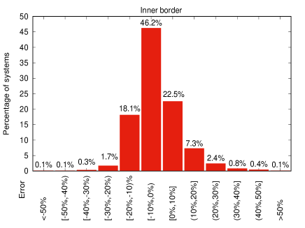
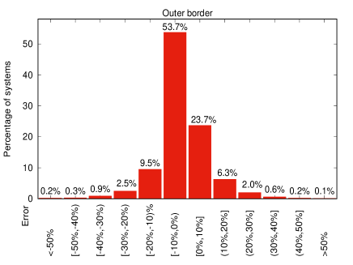
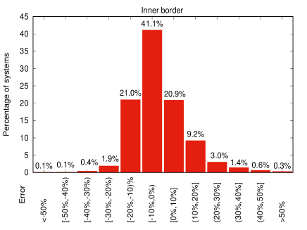
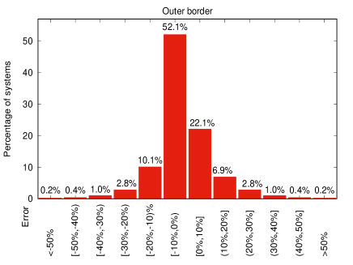
الحالة، بينما تمثل مخططات الصف السفلي مجموعة البيانات الكاملة.).| INNER BORDER DISTRIBUTION | |||||
| Quantity per zone | |||||
| N.U.I.P. | Stable | Mixed | Unstable | Total | |
| Total | |||||
| OUTER BORDER DISTRIBUTION | |||||
| Quantity per zone | |||||
| N.U.I.P. | Stable | Mixed | Unstable | Total | |
| Total |
| INNER BORDER DISTRIBUTION | |||||
| Quantity per zone | |||||
| N.U.I.P. | Stable | Mixed | Unstable | Total | |
| Total | |||||
| OUTER BORDER DISTRIBUTION | |||||
| Quantity per zone | |||||
| N.U.I.P. | Stable | Mixed | Unstable | Total | |
| Total |
6 تطبيق على أنظمة الكواكب المحيطة المعروفة.
من بين الكواكب الخارجية التي تم اكتشافها حتى اليوم، يوجد عدد منها في مدارات حول ثنائيات. في هذا القسم نطبق معيار الاستقرار الخاص بنا على Kepler و TESS الأنظمة المحيطة بالثنائيات الالمعروفة حاليًا، أي Kepler-16 (Doyle et al., 2011), Kepler-34 و Kepler-35 (Welsh et al., 2012), Kepler-38 (Orosz et al., 2012a), Kepler-47 (Orosz et al., 2012b, 2019), Kepler-64 (Schwamb et al., 2013; Kostov et al., 2013), Kepler-413 (Kostov et al., 2014), Kepler-453 (Welsh et al., 2015), Kepler-1647 (Kostov et al., 2016), Kepler-1661 (Socia et al., 2020), TIC 172900988 (Kostov et al., 2021) و TOI-1338 (Standing et al., 2023).من أجل التحقق من صحة تنبؤاتنا مع الأنظمة المذكورة أعلاه، فإننا نستخدم قيم المعلمات الواردة في أبحاث الاكتشاف المعنية. يمكن العثور على قيم المعلمات هذه في الجدول 5.
وبتقييم ملاءماتنا التجريبية مع الأنظمة المذكورة أعلاه، نجد أن جميع الكواكب، باستثناء كوكب واحد، تقع خارج المحور الحرج الخارجي شبه الرئيسي. يمكن العثور على قيم المحاور الحرجة في الجدول 6. Kepler-34 هو الاستثناء الوحيد مع وجود محوره شبه الرئيسي الحرج الخارجي 1.092 وحدة فلكية، بينما يقع الكوكب في 1.090 وحدة فلكية. وبشكل عام، تتفق هذه النتائج مع تحليلات الاستقرار في الأبحاث الاكتشافية وغيرها من التحقيقات التي تركز بشكل خاص على بعض تلك الأنظمة المحيطة بالثنائيات (مثلا Chavez et al., 2015; Popova and Shevchenko, 2016).
نود أن نشير إلى أننا، في هذا التحليل السريع، أهملنا التفاعلات بين الكواكب في النظامين المتعددي الكواكب Kepler-47 و TOI-1338، أي إننا عاملناها كأنظمة محيطة بالثنائيات تضم كوكبًا واحدًا في كل مرة. أما بالنسبة إلى Kepler-47, Orosz et al. (2012b, 2019) (والمراجع الواردة فيه) تشير إلى أن المنطقة غير المستقرة حول الثنائي تمتد حولها 0.18 وحدة فلكية وهو متفق جيدًا مع ما وجدناه. أما بالنسبة إلى TOI-1338c,نظرًا إلى أن ميل الكوكب الخارجي وخط طول عقدته غير معروفين, Standing et al. (2023) وجد أن النظام يصبح غير مستقر عند ميول متبادلة . ومن ناحية أخرى، إذا غيرنا الميل المتبادل في ملاءماتنا، نلاحظ أن الكوكب الخارجي يقع دائمًا داخل المنطقة المستقرة.
| System | ||||||||
|---|---|---|---|---|---|---|---|---|
| Kepler-16 | 0.6897 | 0.20255 | 0.333 | 0.4 | 0.22431 | 0.7048 | 0.15944 | 0.00685 |
| Kepler-34 | 1.0479 | 1.0208 | 0.22 | 1.81 | 0.22882 | 1.0896 | 0.52087 | 0.182 |
| Kepler-35 | 0.8876 | 0.8094 | 0.127 | 1.28 | 0.17617 | 0.60345 | 0.1421 | 0.042 |
| Kepler-38 | 0.949 | 0.249 | 0.384 | 0.182 | 0.1469 | 0.4646 | 0.1032 | 0.032 |
| Kepler-47b | 0.957 | 0.342 | 0.006513 | 0.166 | 0.08145 | 0.2877 | 0.0288 | 0.021 |
| Kepler-47c | 0.957 | 0.342 | 0.05984 | 1.165 | 0.08145 | 0.6992 | 0.0288 | 0.024 |
| Kepler-47d | 0.957 | 0.342 | 0.00997 | 1.38 | 0.08145 | 0.9638 | 0.0288 | 0.044 |
| Kepler-64 | 1.528 | 0.378 | 0.531 | 2.814 | 0.1744 | 0.634 | 0.2117 | 0.0539 |
| Kepler-413 | 0.82 | 0.5423 | 0.21 | 4.073 | 0.10148 | 0.3553 | 0.0365 | 0.1181 |
| Kepler-453 | 0.944 | 0.1951 | 0.05 | 2.258 | 0.18539 | 0.7903 | 0.0524 | 0.0359 |
| Kepler-1647 | 1.21 | 0.975 | 1.52 | 2.9855 | 0.1276 | 2.7205 | 0.1593 | 0.0581 |
| Kepler-1661 | 0.841 | 0.262 | 0.053 | 0.93 | 0.187 | 0.633 | 0.112 | 0.057 |
| TIC 172900988 | 1.2388 | 1.2023 | 2.74 | 1.45 | 0.191928 | 0.89809 | 0.44793 | 0.088 |
| TOI-1338b | 1.127 | 0.3313 | 0.0685 | 0 | 0.1321 | 0.4607 | 0.155522 | 0.088 |
| TOI-1338c | 1.127 | 0.3313 | 0.205 | 0-180 | 0.1321 | 0.794 | 0.155522 | 0.16 |
| System | |||
|---|---|---|---|
| Kepler-16 | 0.551 | 0.688 | 0.705 |
| Kepler-34 | 0.804 | 1.092 | 1.090 |
| Kepler-35 | 0.410 | 0.511 | 0.603 |
| Kepler-38 | 0.349 | 0.427 | 0.464 |
| Kepler-47 (b) | 0.178 | 0.198 | 0.288 |
| Kepler-47 (c) | 0.179 | 0.200 | 0.699 |
| Kepler-47 (d) | 0.181 | 0.206 | 0.964 |
| Kepler-64 | 0.457 | 0.627 | 0.634 |
| Kepler-413 | 0.236 | 0.281 | 0.355 |
| Kepler-453 | 0.427 | 0.504 | 0.790 |
| Kepler-1647 | 0.310 | 0.397 | 2.720 |
| Kepler-1661 | 0.452 | 0.570 | 0.633 |
| TIC 172900988 | 0.579 | 0.784 | 0.898 |
| TOI-1338 (b) | 0.337 | 0.448 | 0.461 |
| TOI-1338 (c) | 0.361 | 0.492 | 0.794 |
7 البوابة الإلكترونية و API
يقدم هذا القسم إعادة إطلاق ExoStab (Pilat-Lohinger and Eggl, 2011)، أي واجهة Exostab 2.0 البرمجية (ويشار إليها فيما يأتي باسم API)44 4 https://exostab2.readthedocs.io/latest/. وتعد Exostab 2.0 (Pilat-Lohinger, 2024) واجهة برمجية مصممة لتيسير التفاعل مع كتالوجات كبيرة من محاكاة الاستقرار العددي كتلك التي أنشئت في هذا العمل. وتتيح واجهة API للبرامج والتطبيقات الخارجية الوصول إلى وظائف كتالوج الاستقرار واستخدامها بطريقة مضبوطة وموحدة. وتتبع واجهة API نمط RESTful المعماري، وتوفر مجموعة واضحة من نقاط النهاية لاسترجاع البيانات ومعالجتها والتحكم فيها. وعلى وجه الخصوص، يمكن الاستعلام عن حدود الاستقرار لتكوينات نظامية محددة، فتُعاد أقرب المطابقات في قاعدة بياناتنا بصيغة JSON. وتجعل كثافة شبكة الكتالوج المعقولة هذه العملية ذات معنى. أما الميزة الحقيقية لإرجاع أقرب الجيران فهي تجنب مشكلات الملاءمة والاستيفاء، مثل خلط السلوك الديناميكي للأنظمة داخل الرنين وخارجه، وغير ذلك. ولا تُعاد إلا حدود الاستقرار التي حُسبت فعليًا. وتتيح واجهة أمامية قائمة على الويب55 5 https://apexgroup.web.illinois.edu/stability/index.html تصورًا ملائمًا والوصول إلى نتائج الاستعلام في جدول منسق وكذلك عبر تنزيل ملف CSV.
8 المناقشة
لقد رأينا في الأقسام 4 و 5 أن مصنفات الاستقرار الديناميكي ليست مثالية بغض النظر عما إذا تم إنشاؤها تجريبيًا أو من خلال التعلم الآلي. وبما أن هذه الأدوات تُستخدم بشكل متكرر في المجتمع العلمي، فإننا ننتقل الآن إلى مقارنة نتائجنا مع معايير الاستقرار الشائعة الأخرى، من أجل وضع القيود المفروضة على نماذجنا في السياق.
8.1 المقارنة مع النتائج الأخرى
يحتوي الشكل 11 على مقارنة رسومية لمعايير الاستقرار المختلفة، بما في ذلك تلك التي تم تطويرها في هذه الدراسة,
للأنظمة ذات المدارات المائلة وذات انحرافات مركزية. تؤدي الملاءمات التجريبية المقدمة في هذا العمل أداءً أفضل بكثير من Holman and Wiegert (1999), Mardling and Aarseth (2001) و Adelbert et al. (2023) في التقاط السلوك الديناميكي لمثل هذه التكوينات. معيار الاستقرار بواسطة Holman and Wiegert (1999),على سبيل المثال، لا يأخذ في الاعتبار انحراف مركزية الكواكب، وبالتالي يفشل في التنبؤ بشكل صحيح بمكان حدوث الانتقال بين المدارات المستقرة وغير المستقرة. وتعمل صيغة Adelbert et al. (2023) بشكل أفضل بالنسبة لمدارات الكواكب اللامركزية مقارنة بـ Holman and Wiegert (1999),ولكن بالنسبة للنجوم الثنائية الموجودة في مدارات شديدة الانحراف، فإن توقعات الاستقرار الديناميكي تعتمد على المعادلة(2)ضعيفة. وبطبيعة الحال، كل من المعايير في Holman and Wiegert (1999) وفي Adelbert et al. (2023) مشتقة من الأنظمة المستوية ومن أجلها، وهو قيد كبير آخر. ومن ناحية أخرى، على الرغم من معيار Mardling and Aarseth (2001) ينطبق على مدارات ثلاثية الأبعاد، فإن اعتمادها الخطي على  يفشل بوضوح في التقاط الاختلافات في حدود الاستقرار بسبب الميل المتبادل. وهذا أمر متوقع، حيث أن الاعتماد غير الخطي لحد الاستقرار على الميل المتبادل قد لوحظ من قبل (مثلا Georgakarakos, 2013; Vynatheya et al., 2022; Tory et al., 2022).إضافة إلى ذلك، فإن المعادلة(3)ليست دالة في
يفشل بوضوح في التقاط الاختلافات في حدود الاستقرار بسبب الميل المتبادل. وهذا أمر متوقع، حيث أن الاعتماد غير الخطي لحد الاستقرار على الميل المتبادل قد لوحظ من قبل (مثلا Georgakarakos, 2013; Vynatheya et al., 2022; Tory et al., 2022).إضافة إلى ذلك، فإن المعادلة(3)ليست دالة في  ولا في
ولا في  . ومع ذلك، فإن هاتين المعلمتين لهما تأثير معتدل على تحديد حدود الاستقرار كما تمت مناقشته في القسم 3 وكما يظهر في الشكل 2. وأخيرًا، منحنى الاستقرار المعطى بالمعادلة(3)يبدو أنه أقرب بكثير إلى حدودنا الحرجة الداخلية منه إلى الحدود الخارجية، وبالتالي سيتم تصنيف العديد من المدارات غير المستقرة على أنها مستقرة.
. ومع ذلك، فإن هاتين المعلمتين لهما تأثير معتدل على تحديد حدود الاستقرار كما تمت مناقشته في القسم 3 وكما يظهر في الشكل 2. وأخيرًا، منحنى الاستقرار المعطى بالمعادلة(3)يبدو أنه أقرب بكثير إلى حدودنا الحرجة الداخلية منه إلى الحدود الخارجية، وبالتالي سيتم تصنيف العديد من المدارات غير المستقرة على أنها مستقرة.
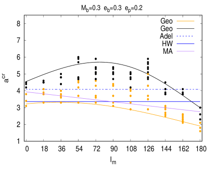
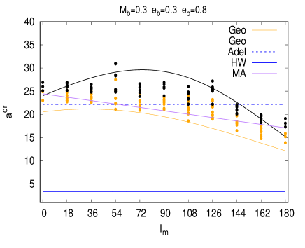
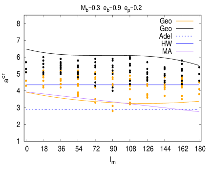
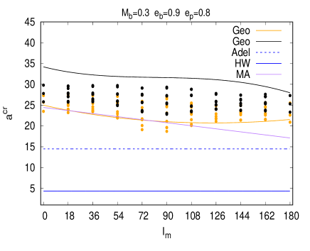
8.2 التأثيرات غير النيوتونية
يمكن أن تكون التأثيرات الأخرى غير الجاذبية النيوتونية ذات أهمية للتطور المداري للأنظمة الثلاثية الهرمية. تتراوح الأمثلة من السبق النسبي لحضيض الثنائي إلى الاحتكاك المدي بين النجمين إلى تشوه شكل النجوم بسبب المد والجزر والدوران (مثلا Fabrycky and Tremaine, 2007; Prodan and Murray, 2012; Naoz et al., 2013; Liu et al., 2015; Correia et al., 2016).
قد يؤدي الاحتكاك المدي بين النجوم في النهاية إلى تقليص مدارها وتقليل الانحراف المركزي. اعتمادًا على المسافة بين النجوم، يمكن أن يكون النطاق الزمني لأي تغييرات مدارية قد تؤثر في النهاية على مدار الكوكب طويلًا جدًا. على سبيل المثال، الانحراف المركزي والمحور شبه الرئيسي للنجوم Kepler-34 انخفضا بنحو  و على التوالي بعد 8 Gyrs (Chavez et al., 2015).
و على التوالي بعد 8 Gyrs (Chavez et al., 2015).
من ناحية أخرى، اعتمادًا على معلمات النظام، يمكن أن تعمل السبق النسبي للحضيض على نطاقات زمنية مماثلة لوقت التكامل لدينا  فترات مدارية كوكبية ولها تأثير على التطور المداري للكوكب (Migaszewski and Goździewski, 2011; Georgakarakos and Eggl, 2015).حضيض Kepler-34 وُجد أنه يدور بفترة حوالي سنة (Chavez et al., 2015),في حين يبلغ زمن التكامل الذي يتوافق مع Kepler-34b,في سياق هذا العمل، يبلغ نحو سنة.
فترات مدارية كوكبية ولها تأثير على التطور المداري للكوكب (Migaszewski and Goździewski, 2011; Georgakarakos and Eggl, 2015).حضيض Kepler-34 وُجد أنه يدور بفترة حوالي سنة (Chavez et al., 2015),في حين يبلغ زمن التكامل الذي يتوافق مع Kepler-34b,في سياق هذا العمل، يبلغ نحو سنة.
بحثت الدراسات المذكورة أعلاه في التطور الديناميكي للكواكب المحيطة بالثنائيات بعيدًا عن رنين الحركة المتوسطة، من خلال النظر في التأثيرات طويلة الأمد بشكل أساسي. كما ذكرنا في القسم 3,إحدى العمليات الرئيسية التي تؤدي إلى عدم استقرار نظام الأجسام الثلاثة هي تداخل رنينات الحركة المتوسطة المجاورة (Wisdom, 1980; Mudryk and Wu, 2006; Deck et al., 2013; Ramos et al., 2015; Hadden and Lithwick, 2018).يعد التأثير الدقيق للنسبية وتفاعلات المد والجزر على الأنظمة المحيطة بالثنائيات القريبة من رنين الحركة المتوسطة موضوعًا للبحث المستمر.
9 ملخص واستنتاجات
في هذا العمل، قمنا بدراسة مشكلة الاستقرار الديناميكي للمدارات المحيطة بالثنائيات الخاضعة للجاذبية النيوتونية. لقد نفذنا أكثر 300 مليون محاكاة عددية دقيقة للغاية لأنظمة ثلاثية الأبعاد وذات انحرافات مركزية مع الأخذ في الاعتبار نطاقًا واسعًا من نسب الكتلة ذات الصلة بدراسة الكواكب المحيطة. تتراوح الانحرافات المركزية لكل من المدارات الثنائية النجمية ومدارات الكواكب في دراستنا من 0-0.9. نسب الكتلة في الثنائي الداخلي من النجوم ذات الكتلة المتساوية إلى نسب الكتلة 0.01. بالنسبة للجسم الخارجي، أي الكوكب المحيط بالثنائي، قمنا باستكشاف نسب الكتلة بدءًا من الأجسام الشبيهة بالقزم البني وصولاً إلى كواكب ذات كتلة عطارد. تم إجراء تجاربنا العددية على مدى فترة زمنية تبلغ مليون فترة مدارية كوكبية. يتيح لنا ذلك التقاط التأثيرات الديناميكية التي تتطلب بعض الوقت لتكوينها (مثل الرنين طويل الأمد) والتأثير على مدار الكوكب.
قمنا بتصنيف فضاء المعلمات إلى ثلاثة أنظمة استقرار مفصولة بحدود حرجة: منطقة كانت فيها المدارات التي تم فحصها مستقرة تمامًا، ومنطقة كانت فيها المدارات التي تم فحصها غير مستقرة تمامًا، ومنطقة واحدة ذات سلوك مختلط. تلتقط المنطقة المختلطة، على سبيل المثال، تأثير رنينات الحركة المتوسطة على استقرار الكواكب المحيطة بالثنائيات. نجد أن موقع حدود الاستقرار الحرجة يتأثر بشكل أساسي بانحرافات مركزية المدارات الكوكبية والثنائية، ونسبة كتلة الثنائي والميل المتبادل بين المستويين المداري الثنائي والكوكبي.
استنادًا إلى نتائج عمليات المحاكاة العددية، اشتقنا صيغًا تجريبية للمحاور شبه الرئيسية الحرجة للأنظمة الكوكبية المحيطة كدالة لمعلمات النظام التي تحدد ما إذا كان التكوين مستقرًا ديناميكيًا على مدار مليون مدار كوكبي أم لا. لقد قمنا بتطوير مجموعتين من صيغ الملاءمة: واحدة لانحرافات مركزية الكواكب حتى 0.8 التي تعطى بواسطة المعادلات(10), (11)و(12)وواحد لانحراف الكواكب بارتفاع 0.9 التي يتم وصفها بواسطة المعادلات(10), (13)و(14). يُظهر الأول أداءً أفضل من حيث تصنيف الاستقرار لمعظم الأنظمة، في حين أن الأخير يهدف إلى تغطية فضاء المعلمات الذي فُحص بالكامل.
كما دربنا نماذج تعلم آلي (ML) على مجموعة بياناتنا، وقارنا أداءها في التنبؤ بالاستقرار الديناميكي في الأنظمة المحيطة بالثنائيات. واختُبرت الصيغ التجريبية ونماذج التعلم الآلي مقابل نتائج المحاكاة العددية للأنظمة الثنائية المختارة عشوائيًا. تبدي مصنفات ML والمصنفات التجريبية أداءً مشابهًا، وتشكل تحسنًا كبيرًا مقارنة بالتقنيات الحالية، ولا سيما المعيار المتقدم في Holman and Wiegert (1999),من حيث فضاء المعلمات الذي تغطيه.
وأخيرا، قمنا باختبار معايير الاستقرار التجريبية لدينا مقابل أنظمة Kepler وTESS المعروفة. وتؤكد النتائج أن العديد من الكواكب المحيطة بالثنائيات المكتشفة حتى الآن تدور بالقرب من حدود الاستقرار لأنظمتها.
نظرًا لأن عمليات المحاكاة والنتائج اللاحقة لدينا تعتمد على الجاذبية النيوتونية ونسب الكتلة بدون أبعاد، فهي قابلة للتطبيق على أي نظام جاذبية متوافق مع مثل هذا النموذج. وبالتالي، يمكن استخدام أدواتنا التنبؤية في سياقات فيزيائية فلكية مختلفة، مثل دراسات تكوين الكواكب، والكواكب الصغيرة ذات الأقمار الصغيرة في النظام الشمسي، بالإضافة إلى اكتشاف وتوصيف الكواكب المحيطة بالثنائيات في البحث عن عوالم صالحة للسكن.
References
- Formation and Evolution of Hierarchical Systems. In Revista Mexicana de Astronomia y Astrofisica Conference Series, C. Allen and C. Scarfe (Eds.), Revista Mexicana de Astronomia y Astrofisica Conference Series, Vol. 21, pp. 156–162. Cited by: §1.
- Stability of coorbital planets around binaries. A&A 680, pp. A29. External Links: Document, 2310.07575 Cited by: §1, Figure 11, §8.1.
- ML model. Zenodo. External Links: Document, Link Cited by: §5.
- A dynamical stability study of Kepler Circumbinary planetary systems with one planet. MNRAS 446 (2), pp. 1283–1292. External Links: Document, 1411.7761 Cited by: §6, §8.2, §8.2.
- Polar planets around highly eccentric binaries are the most stable. MNRAS 494 (4), pp. 4645–4655. External Links: Document, 2004.07230 Cited by: §3.
- XGBoost: A Scalable Tree Boosting System. arXiv e-prints, pp. arXiv:1603.02754. External Links: Document, 1603.02754 Cited by: §5.
- Terrestrial planet formation in a circumbinary disc around a coplanar binary. MNRAS 507 (3), pp. 3461–3472. External Links: Document, 2108.09257 Cited by: §1.
- A universal instability of many-dimensional oscillator systems. Physics Reports 52 (5), pp. 263–379. External Links: ISSN 0370-1573, Document, Link Cited by: §3.
- Secular and tidal evolution of circumbinary systems. Celestial Mechanics and Dynamical Astronomy 126 (1-3), pp. 189–225. External Links: Document, 1608.03484 Cited by: §8.2.
- First-order Resonance Overlap and the Stability of Close Two-planet Systems. ApJ 774 (2), pp. 129. External Links: Document, 1307.8119 Cited by: §8.2.
- The dynamics and stability of circumbinary orbits. MNRAS 418 (4), pp. 2656–2668. External Links: Document, 1108.4144 Cited by: §3.
- Kepler-16: A Transiting Circumbinary Planet. Science 333 (6049), pp. 1602. External Links: Document, 1109.3432 Cited by: §6.
- Stability of outer planetary orbits (P-types) in binaries.. A&A 226, pp. 335–342. Cited by: §1.
- Critical orbits in the elliptic restricted three-body problem.. A&A 167, pp. 379–386. Cited by: §1, §1, §2.2.
- Gaia’s binary star renaissance. New Astronomy Reviews, pp. 101694. Cited by: §1.
- Shrinking Binary and Planetary Orbits by Kozai Cycles with Tidal Friction. ApJ 669 (2), pp. 1298–1315. External Links: Document, 0705.4285 Cited by: §8.2.
- High-inclination orbits in the secular quadrupolar three-body problem. Monthly Notices of the Royal Astronomical Society 401 (2), pp. 1189–1198. Cited by: §3.
- Circumbinary habitable zones in the presence of a giant planet. Frontiers in Astronomy and Space Sciences 8, pp. 44. External Links: Document, 2103.09201 Cited by: §1.
- Analytic Orbit Propagation for Transiting Circumbinary Planets. ApJ 802 (2), pp. 94. External Links: Document, 1502.06387 Cited by: §3, §8.2.
- Stability criteria for hierarchical triple systems. Celestial Mechanics and Dynamical Astronomy 100 (2), pp. 151–168. External Links: Document, 1408.5431 Cited by: §1, §3.
- The dependence of the stability of hierarchical triple systems on the orbital inclination. New A 23, pp. 41–48. External Links: Document, 1302.5599 Cited by: §3, §8.1.
- Dynamics and habitability of the TESS circumbinary systems TOI-1338 and TIC-172900988. MNRAS 511 (3), pp. 4396–4403. External Links: Document, 2111.08235 Cited by: §1.
- Generalized Hill-stability criteria for hierarchical three-body systems at arbitrary inclinations. MNRAS 466 (1), pp. 276–285. External Links: Document, 1609.05912 Cited by: §1.
- A Criterion for the Onset of Chaos in Systems of Two Eccentric Planets. AJ 156 (3), pp. 95. External Links: Document, 1803.08510 Cited by: §8.2.
- Symmetric and asymmetric librations in extrasolar planetary systems: a global view. Celestial Mechanics and Dynamical Astronomy 95, pp. 225–244. Cited by: §3.
- Planetary orbits in binary stars.. AJ 82, pp. 753–756. External Links: Document Cited by: §1.
- Long-Term Stability of Planets in Binary Systems. AJ 117 (1), pp. 621–628. External Links: Document, astro-ph/9809315 Cited by: §1, §1, §1, §1, Figure 11, §8.1, §9.
- Stability of P-type orbits around stellar binaries: An extension to counter-rotating orbits. New A 84, pp. 101516. External Links: Document Cited by: §1.
- The AstraLux Large M-dwarf Multiplicity Survey. ApJ 754 (1), pp. 44. External Links: Document, 1205.4718 Cited by: §1.
- A Pluto-Charon Concerto. II. Formation of a Circumbinary Disk of Debris after the Giant Impact. AJ 161 (5), pp. 211. External Links: Document, 2102.11311 Cited by: §1.
- Kepler-413b: A Slightly Misaligned, Neptune-size Transiting Circumbinary Planet. ApJ 784 (1), pp. 14. External Links: Document, 1401.7275 Cited by: §6.
- A Gas Giant Circumbinary Planet Transiting the F Star Primary of the Eclipsing Binary Star KIC 4862625 and the Independent Discovery and Characterization of the Two Transiting Planets in the Kepler-47 System. ApJ 770 (1), pp. 52. External Links: Document, 1210.3850 Cited by: §6.
- Kepler-1647b: The Largest and Longest-period Kepler Transiting Circumbinary Planet. ApJ 827 (1), pp. 86. External Links: Document, 1512.00189 Cited by: §6.
- TIC 172900988: A Transiting Circumbinary Planet Detected in One Sector of TESS Data. AJ 162 (6), pp. 234. External Links: Document, 2105.08614 Cited by: §1, §6.
- A machine learns to predict the stability of circumbinary planets. MNRAS 476 (4), pp. 5692–5697. External Links: Document, 1801.03955 Cited by: §1.
- Suppression of extreme orbital evolution in triple systems with short-range forces. MNRAS 447 (1), pp. 747–764. External Links: Document, 1409.6717 Cited by: §8.2.
- Dynamics and Stability of Three-Body Systems. In The Dynamics of Small Bodies in the Solar System, A Major Key to Solar System Studies, B. A. Steves and A. E. Roy (Eds.), NATO Advanced Study Institute (ASI) Series C, Vol. 522, pp. 385. Cited by: §1, §1, Figure 11.
- Tidal interactions in star cluster simulations. MNRAS 321 (3), pp. 398–420. External Links: Document Cited by: §1, §1, Figure 11, §8.1.
- Resonance, Chaos and Stability: The Three-Body Problem in Astrophysics. In The Cambridge N-Body Lectures, S. J. Aarseth, C. A. Tout, and R. A. Mardling (Eds.), Vol. 760, pp. 59. External Links: Document Cited by: §3.
- New developments for modern celestial mechanics – I. General coplanar three-body systems. Application to exoplanets. Monthly Notices of the Royal Astronomical Society 435 (3), pp. 2187–2226. External Links: ISSN 0035-8711, Document, Link, https://academic.oup.com/mnras/article-pdf/435/3/2187/3385388/stt1438.pdf Cited by: §3.
- Secular dynamics of the three-body problem: application to the Andromedae planetary system. Icarus 168 (2), pp. 237–248. External Links: Document, astro-ph/0307094 Cited by: §3.
- The non-resonant, relativistic dynamics of circumbinary planets. MNRAS 411 (1), pp. 565–583. External Links: Document, 1006.5961 Cited by: §8.2.
- Practical Symplectic Methods with Time Transformation for the Few-Body Problem. Celestial Mechanics and Dynamical Astronomy 67 (2), pp. 145–165. External Links: Document Cited by: §2.
- Resonance Overlap Is Responsible for Ejecting Planets in Binary Systems. ApJ 639 (1), pp. 423–431. External Links: Document, astro-ph/0511710 Cited by: §8.2.
- RESONANT post-newtonian eccentricity excitation in hierarchical three-body systems. The Astrophysical Journal 773 (2), pp. 187. External Links: Document, Link Cited by: §8.2.
- The Eccentric Kozai-Lidov Mechanism for Outer Test Particle. AJ 154 (1), pp. 18. External Links: Document, 1701.03795 Cited by: §3.
- The Origin and Evolution of Multiple Star Systems. arXiv e-prints, pp. arXiv:2203.10066. External Links: 2203.10066 Cited by: §1.
- The Neptune-sized Circumbinary Planet Kepler-38b. ApJ 758 (2), pp. 87. External Links: Document, 1208.3712 Cited by: §6.
- Kepler-47: A Transiting Circumbinary Multiplanet System. Science 337 (6101), pp. 1511. External Links: Document, 1208.5489 Cited by: §6, §6.
- Discovery of a Third Transiting Planet in the Kepler-47 Circumbinary System. AJ 157 (5), pp. 174. External Links: Document, 1904.07255 Cited by: §6, §6.
- Stability limits in double stars. A study of inclined planetary orbits. A&A 400, pp. 1085–1094. External Links: Document Cited by: §1.
- ExoStab: a www-tool to verify the dynamical stability of extra-solar planets. Publications of the Astronomy Department of the Eotvos Lorand University 20, pp. 135–144. Cited by: §7.
- Exostab 2.0. Zenodo. External Links: Document, Link Cited by: §7.
- On the stability of circumbinary planetary systems. Astronomy Letters 42 (7), pp. 474–481. External Links: Document Cited by: §6.
- On the Dynamics and Tidal Dissipation Rate of the White Dwarf in 4U 1820-30. ApJ 747 (1), pp. 4. External Links: Document, 1110.6655 Cited by: §8.2.
- Stability Limits of Circumbinary Planets: Is There a Pile-up in the Kepler CBPs?. ApJ 856 (2), pp. 150. External Links: Document, 1802.08868 Cited by: §1.
- Orbital Stability of Circumstellar Planets in Binary Systems. AJ 159 (3), pp. 80. External Links: Document, 1912.11019 Cited by: §1.
- A Survey of Stellar Families: Multiplicity of Solar-type Stars. ApJS 190 (1), pp. 1–42. External Links: Document, 1007.0414 Cited by: §1.
- The resonance overlap and Hill stability criteria revisited. Celestial Mechanics and Dynamical Astronomy 123 (4), pp. 453–479. External Links: Document, 1509.03607 Cited by: §8.2.
- Planet Hunters: A Transiting Circumbinary Planet in a Quadruple Star System. ApJ 768 (2), pp. 127. External Links: Document, 1210.3612 Cited by: §6.
- Chaotic Zones around Gravitating Binaries. ApJ 799 (1), pp. 8. External Links: Document, 1405.3788 Cited by: §1.
- Kepler-1661 b: A Neptune-sized Kepler Transiting Circumbinary Planet around a Grazing Eclipsing Binary. AJ 159 (3), pp. 94. External Links: Document, 2001.02840 Cited by: §6.
- Radial-velocity discovery of a second planet in the TOI-1338/BEBOP-1 circumbinary system. Nature Astronomy 7, pp. 702–714. External Links: Document, 2301.10794 Cited by: Figure 4, §6, §6.
- Memoire sur le problem des trois corps. Acta Math. 36, pp. 105–179. External Links: Document Cited by: §1.
- Review of Concepts of Stability. Celestial Mechanics 34 (1-4), pp. 49–64. External Links: Document Cited by: §2.2.
- Empirical stability boundary for hierarchical triples. PASA 39, pp. e062. External Links: Document, 2208.14005 Cited by: §8.1.
- High-inclination planets and asteroids in multistellar systems. MNRAS 394 (4), pp. 1721–1726. External Links: Document, 0812.4528 Cited by: §3.
- Algebraic and machine learning approach to hierarchical triple-star stability. MNRAS 516 (3), pp. 4146–4155. External Links: Document, 2207.03151 Cited by: §1, §8.1.
- Transiting circumbinary planets Kepler-34 b and Kepler-35 b. Nature 481 (7382), pp. 475–479. External Links: Document, 1204.3955 Cited by: §6.
- Kepler 453 b - The 10th Kepler Transiting Circumbinary Planet. ApJ 809 (1), pp. 26. External Links: Document, 1409.1605 Cited by: §6.
- The resonance overlap criterion and the onset of stochastic behavior in the restricted three-body problem. AJ 85, pp. 1122–1133. External Links: Document Cited by: §8.2.